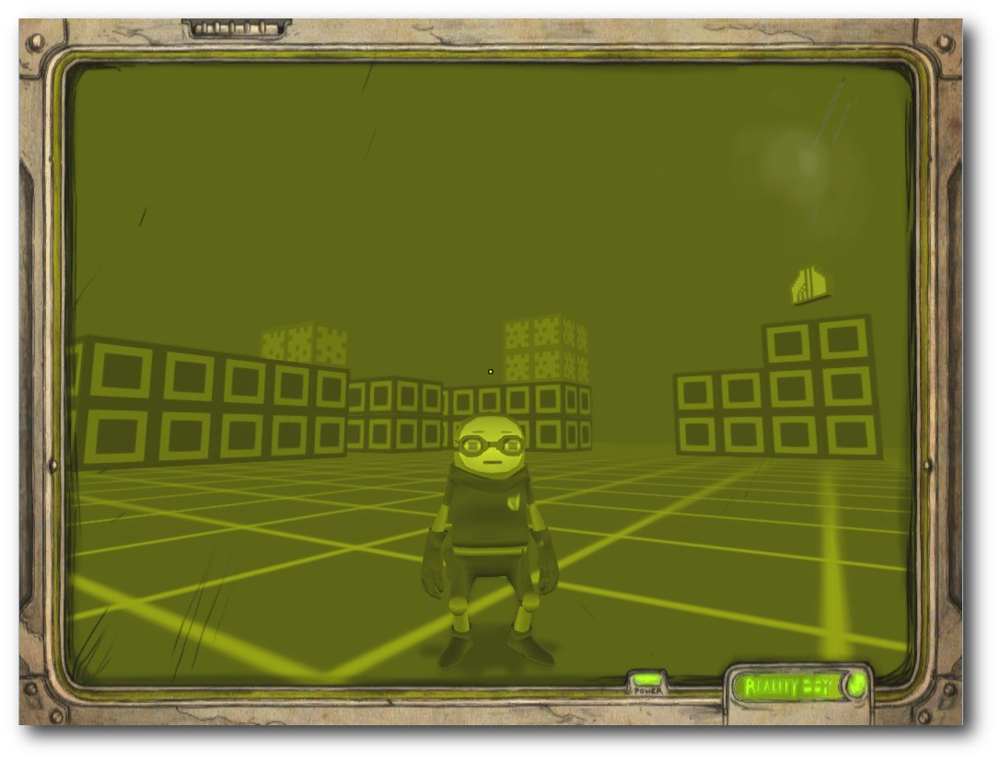
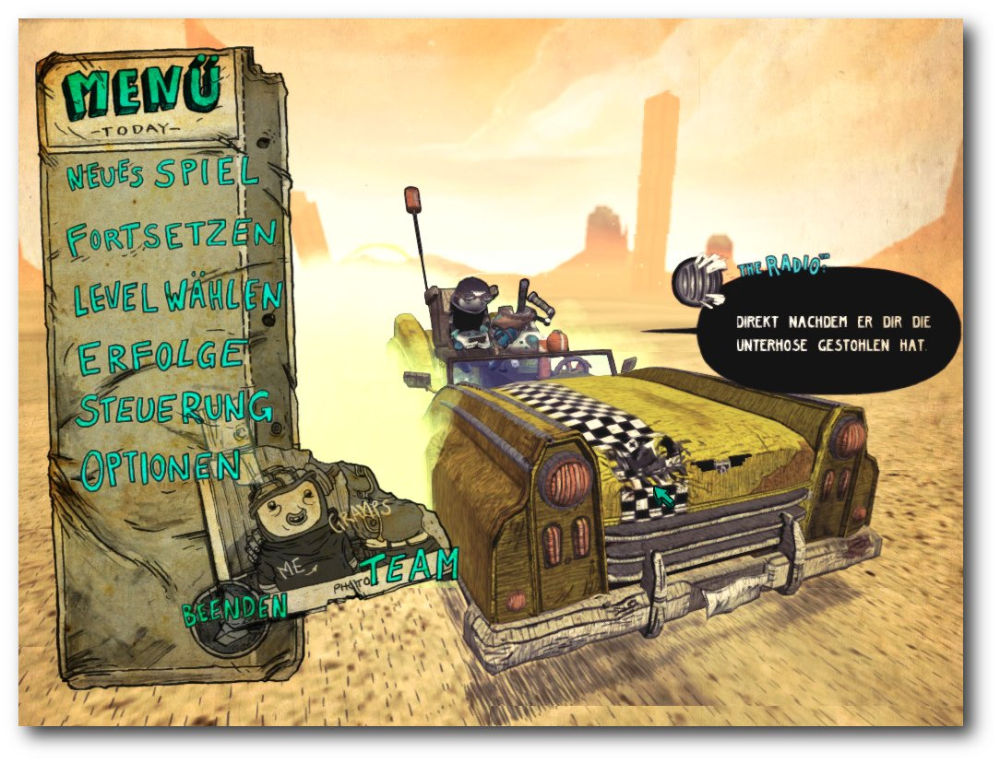
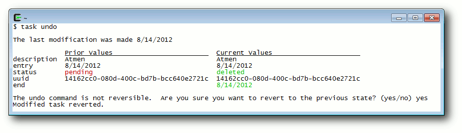
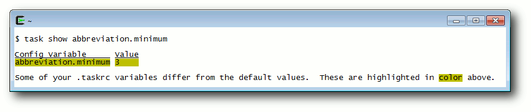

freiesMagazin September 2012
(ISSN 1867-7991)
Topthemen dieser Ausgabe
PasswortsicherheitNahezu jede Zeitschrift und Internetseite, die sich mit einem PC-nahen Thema beschäftigt, hat irgendwann einmal einen Artikel zum Thema Passwortsicherheit herausgebracht. Diese bestehen meist aus einer Reihe von Regeln, die man als Nutzer beherzigen sollte, damit es nicht zum bösen Erwachen kommt. Der Artikel möchte das Thema von verschiedenen Seiten beleuchten, wobei es hauptsächlich um Passwortsicherheit im Internet geht. So soll sowohl für die Nutzer als auch für die Entwickler von Webseiten, Protokollen und Anwendungen ein kleiner Einblick gegeben werden, wo Probleme liegen können und wie man sie verhindern kann. (weiterlesen)
Tiny & Big – Unterwäschefetischismus deluxe
Menschen leben und Menschen sterben – und manche sind sogar so freundlich und vererben ihren Verwandten einige ihrer Habseligkeiten damit sie immer in guter Erinnerung behalten werden. Warum ein Großvater seinem Enkel ausgerechnet eine Unterhose vermacht und warum diese Unterhose keine normale Unterhose ist, das und vieles mehr erfährt man beim Spielen des Jump'n'Runs „Tiny & Big – Grandpa's Leftovers“. (weiterlesen)
Redis – Mehr als ein Key-Value-Store
Einer der populäreren Vertreter der aktuellen Generation der „NoSQL“-Datenbanken ist sicherlich Redis. Dabei fällt in Kombination mit diesem Key-Value-Store gerne das Wort „schnell“. Redis ist in der Tat schnell, hat aber noch eine ganze Menge mehr zu bieten als bloße Geschwindigkeit. Was genau, soll der Artikel zeigen. (weiterlesen)
Zum Index
Inhalt
Linux allgemeinPasswortsicherheit
Der August im Kernelrückblick
Software
Tiny & Big – Unterwäschefetischismus deluxe
Redis – Mehr als ein Key-Value-Store
Taskwarrior – What's next? (Teil 2)
Community
Rezension: Schrödinger programmiert C++
Rezension: Seven Databases in Seven Weeks
Rezension: Android – Apps entwickeln
Magazin
Editorial
Leserbriefe
Veranstaltungen
Vorschau
Konventionen
Impressum
Zum Index
Editorial
Auf Wiedersehen!
Auf Frühling folgt Sommer, darauf der Herbst und gewöhnlich danach der Winter. Die Flüsse tragen das Wasser aus den Bergen ins Meer, und die Sonne geht jeden Tag im Osten auf und im Westen unter (zumindest auf der nördlichen Erdhalbkugel). Und so ist es auch normal, dass sich das Leben eines Menschen weiterentwickelt, sein Privatleben sich (hoffentlich zum Besseren) ändert und für andere Dinge nicht mehr so viel Zeit bleibt. So geschehen ist dies bei unserem Redaktionsmitglied Dominik Honnef. Im März 2009 hat er als Setzer und Layouter angefangen, ist dann im August 2009 zum Redakteur aufgestiegen und hat uns (mit einer „kleinen“ 13-monatigen Pause) immer tatkräftig und mit viel Einsatzbereitschaft unterstützt. Aus privaten Gründen muss er sich nun leider zurückziehen und anderen Aufgaben in der „realen Welt“ widmen. Wir möchten ihm für seine Unterstützung danken, wünschen ihm alles Gute für die Zukunft und hoffen auf eine eventuelle Rückkehr ins freiesMagazin-Team. Die vakante Stelle im Dreigestirn der Redaktion bleibt aber nicht lange unbesetzt. Wir haben schon aus dem Nachwuchsteam einige Anwärter, sodass die Redaktion zur nächsten freiesMagazin-Ausgabe wieder vollzählig vor Ihnen stehen kann.Vorträge auf der Ubucon
In der letzten Ausgabe von freiesMagazin und auf der Webseite [1] suchten wir Vorträge für die im Oktober 2012 in Berlin stattfindete Ubucon [2]. Es gab einige gute Vorschläge in den Kommentaren und auch per E-Mail, sodass Dominik Wagenführ (Chefredakteur von freiesMagazin) dort zwei Themen präsentieren kann. Zum einen wird über das Thema Lizenzen gesprochen, insbesondere über die Creative-Commons-Lizenz [3]. freiesMagazin und die Artikel darin stehen alle unter einer Creative-Commons-Lizenz. Im Vortrag soll erklärt werden, wozu die CC-Lizenzen da sind und wie man sie korrekt anwendet bzw. Creative-Commons-lizenzierte Inhalte nutzen kann. Hierzu wird es in der nächsten Ausgabe von freiesMagazin auch einen ausführlichen Artikel geben. Das zweite Thema betrifft die Erstellung von freiesMagazin als EPUB. Auch wenn wir hierfür viel Hand anlegen müssen, geschieht die Erstellung dennoch völlig automatisiert aus den LaTeX-Quellen. Im Vortrag soll der Weg von LaTeX zum EPUB erläutert werden, wobei dabei auch erklärt wird, wie man ein PDF oder eine HTML-Seite in ein EPUB wandeln kann. Auch hierzu wird es in einer der nächsten Ausgaben einen Artikel geben. Es gab noch mehr Vorschläge, u. a. etwas zur freiesMagazin-Geschichte und wie sich das Magazin und das Team in den letzten sechs Jahren seit Bestehen verändert hat. Hier fanden wir einen Vortrag etwas zu einseitig und für die Zuhörer nicht interessant genug. Bei Gelegenheit werden wir die Historie von freiesMagazin aber aufarbeiten und in einem Artikel präsentieren.freiesMagazin als RPM-Paket
Nachdem vor kurzem ein Leser freiesMagazin in ein Ubuntu-Paket gepackt hat, sodass man immer die neueste Ausgabe über die Paketverwaltung geliefert bekommt [4], hat sich ein anderer Leser daran ein Beispiel genommen und für RPM-basierende Distributionen einen ähnliches Paket erstellt [5]. In seinem Blog [6] informiert der Leser Sascha Manns darüber, wie man freiesMagazin unter openSUSE, Fedora und Mandriva ebenfalls monatlich als Paket über die Paketverwaltung beziehen kann. Das Paket enthält dabei sowohl die PDF- als auch die EPUB-Ausgabe (mit Bildern). An dieser Stelle sei auch erwähnt, dass fremde Paketquellen (vor allem, wenn sehr viel Software in ihnen vorhanden ist) Probleme bei Paketaktualisierungen bereiten können. Die Benutzung geschieht also auf eigene Gefahr. Daneben erfolgt das Angebot nach wie vor nicht von der freiesMagazin-Redaktion direkt, sondern ist ein reines Privatangebot. Wer es nutzen möchte, ist herzlich dazu eingeladen. Bei Problemen sollte man sich aber an den jeweiligen Betreuer wenden. Und nun viel Spaß mit der neuen Ausgabe. Ihre freiesMagazin-Redaktion Links[1] http://www.freiesmagazin.de/20120719-vorschlaege-fuer-freiesmagazin-vortrag-gesucht
[2] http://ubucon.de/2012/
[3] http://de.creativecommons.org/
[4] http://www.freiesmagazin.de/20120623-freiesmagazin-als-ubuntu-paket
[5] http://www.freiesmagazin.de/20120816-freiesmagazin-als-rpm-paket
[6] http://saigkill.homelinux.net/entry/freiesmagazin-als-rpm-paket
Das Editorial kommentieren
Zum Index
Passwortsicherheit
von Florian Satzger Nahezu jede Zeitschrift und Internetseite, die sich mit einem PC-nahen Thema beschäftigt, hat irgendwann einmal einen Artikel zum Thema Passwortsicherheit herausgebracht. Diese bestehen meist aus einer Reihe von Regeln, die man als Nutzer beherzigen sollte, damit es nicht zum bösen Erwachen kommt. Dieser Artikel möchte das Thema von verschiedenen Seiten beleuchten, wobei es hauptsächlich um Passwortsicherheit im Internet geht. So soll sowohl für die Nutzer als auch für die Entwickler von Webseiten, Protokollen und Anwendungen ein kleiner Einblick gegeben werden, wo Probleme liegen können und wie man sie verhindern kann. Hinweis: Dieser Artikel richtet sich eher an unerfahrene Nutzer und sollte keinesfalls als „alleinige Wahrheit“ angesehen werden, da er in vielen Punkten meine Meinung widerspiegelt.Angriffspunkte und Schwachstellen
Für einen etwaigen Angreifer gibt es grundsätzlich drei verschiedene Punkte an denen er ansetzen kann:- der Nutzer bzw. dessen PC
- der Server
- die Kommunikationsstrecke
Schema eines Man-in-the-middle-Angriffs.
Auch nicht zu unterschätzen ist die Gefahr abgehörter E-Mails. Während die Verbindung zwischen Mailserver und Nutzer meist gut (z. B. mittels SSL [4]) verschlüsselt ist, sieht es bei der Kommunikation der Server untereinander deutlich schlimmer aus. Hier wird oftmals Klartext übertragen – ein gefundenes Fressen für Angreifer. Häufiger sind Angriffe auf PCs. Für Nicht-Windows-Nutzer relativ ungefährlich, weil selten, sind Keylogger und ähnliche Spionagesoftware, die versuchen, z. B. über die Tastatureingaben auf das Passwort zu schließen – doch auch hier sollte Vorsicht geboten sein, z. B. bei Firefox-Add-ons. Größere Gefahren drohen hier durch Techniken wie beispielsweise Cross-Site-Scripting (XSS) [5]. Hierbei wird Schadcode von extern in eine Webseite eingeschleust. Neben sauberer Programmierung seitens des Webentwicklers schafft hier meist auch ein aktueller Browser mit XSS-Schutz Abhilfe – oder aber die Deaktivierung von JavaScript, wobei das auch zu eingeschränkter Funktionalität auf vielen Webseiten führt. Tiefergehende Informationen zu XSS, aber auch zu anderen Schwachstellen in Webanwendungen finden sich zum Beispiel in Google Gruyere [6]. Am Schlimmsten jedoch sind wahrscheinlich Angriffe auf Webserver. Ist der Angreifer einmal auf dem System, stehen ihm womöglich die Daten von tausenden Nutzern zur Verfügung. Natürlich sind nur die wenigsten Webseitenbetreiber ganz so unvorsichtig und speichern die Passwörter im Klartext – meist sind sie entweder verschlüsselt oder es wird nur ein sogenannter Hashwert gespeichert. So ein Hashwert hat die Eigenschaft, dass er zwar leicht berechnet werden kann, es aber unmöglich ist, auf die Ausgangsdaten zu schließen. Vergleichen lässt sich dies mit der Berechnung der Quersumme in der Mathematik: Nimmt man die Zahl 18529, so kann man leicht die Quersumme 25 berechnen – andersherum ist es aber mathematisch unmöglich, von der 25 zurück auf die 18529 zu kommen (zumindest nicht eindeutig). Beispiele für häufig verwendete Hashfunktionen (so nennt man die Berechnungsvorschrift für einen Hashwert) sind MD5 und SHA, letzteres in verschiedenen Varianten [7]. Für eine Passwortabfrage würden dann einfach Hashwerte statt der Passwörter selbst verglichen werden. Dem Angreifer bieten sich hier unter anderen folgende Möglichkeiten, das Passwort dennoch herauszufinden:
- Brute-Force:
- Hierbei probiert der Angreifer alle möglichen Kombinationen durch, also a, b, c, ..., z, aa, ab, ac, usw.
- Wörterbuchangriff:
- Wie der Name schon sagt, versucht es der Angreifer hier mit Worten aus einem Wörterbuch – oder Kombinationen dieser Wörter.
- Regenbogentabelle:
- Bei einer Regenbogentabelle handelt es sich um einen ähnlichen Angriff wie beim Brute-Force, nur mit dem Unterschied, dass die Kombinationen und deren Hashwerte im Voraus berechnet werden. Im Internet gibt es Tabellen mit mehreren Terabyte Größe, die natürlich weitaus schneller zu durchsuchen sind, als alle Kombinationen jedes mal neu zu berechnen [8].
Sicherheit auf Nutzerseite
Der wichtigste Punkt ist sicherlich, seinen eigenen PC abzusichern. Unter Windows gehören neben Updates auch Virenscanner und Firewalls zum guten Ton, während es unter Linux üblicherweise reicht, nicht benutzte Services wie SSH abzuschalten und das System aktuell zu halten – und natürlich nur vertrauenswürdige Software zu installieren. Besonderes Augenmerk sollte hier inzwischen auf den Browser gelegt werden. Hier bringt es leider auch nicht viel auf ein nicht so populäres Programm zurückzugreifen, da unter der Haube doch meist wieder die Firefox-eigene Gecko-Engine oder aber Webkit (von Safari und Chrome) läuft [11]. Übrig bleibt somit wie beim System selbst die Empfehlung, die Software aktuell zu halten und nur vertrauenswürdige Add-ons zu installieren. In fast jedem Ratgeber zum Thema Passwortsicherheit liest man, dass für jeden Service unterschiedliche Passwörter verwendet werden sollen. Das ist auch logisch – schließlich könnte ein Angreifer auf die Idee kommen, das gerade herausgefundene Passwort auch auf anderen Webseiten auszuprobieren. Jedoch ist das Problem ja nicht nur, jeder Seite ein neues Passwort zu geben, sondern auch, sich diese Passwörter zu merken. Eine Möglichkeit sind hier die Passwortmanager der Browser oder Programme wie das freie KeePass [12]. Während Ersteres eher als unsicher anzusehen ist, da die Passwörter hier im Regelfall wieder unverschlüsselt gespeichert werden, ist Letzteres nicht unbedingt besonders komfortabel, man muss schließlich jedes Mal extra das Passwort nachsehen. Ein Kompromiss besteht meiner Meinung nach darin, nicht jeder Seite ein neues Passwort zu geben, sondern zu gruppieren. Webseiten, die besonders sicherheitskritisch sind, wie beispielsweise Homebanking, bekommen natürlich ein eigenes Passwort. Unkritische Seiten wie beispielsweise Foren bekommen hingegen gemeinsam ein Passwort – selbst wenn der Angreifer hier Zutritt erlangt, sind die Auswirkungen eher gering. Wie oben bereits beschrieben, ist jedes Passwort nach genügend langer Zeit zu erraten. Zudem werden auch Computer immer leistungsfähiger, diese Zeit verkürzt sich also ständig. Somit empfiehlt es sich, zumindest kritische Passwörter regelmäßig zu ändern. Sollte ein Angreifer Zugriff darauf erlangt haben, dann wäre es wohl schon geändert, bis er es geknackt hat.Sichere Passwörter
Wenn man sich die Angriffstechniken ansieht, kann man auch Regeln ableiten, wie ein sicheres Passwort aufgebaut werden sollte. Tunlichst zu vermeiden, ist die Nutzung von real existierenden Wörtern, denn Wörterbuchangriffe sind enorm häufig, da sie einfach und schnell durchgeführt werden können. Auch die „Verunstaltung“ solcher Worte mittels Leetspeak [13] (also z. B. „4pf3l“ statt „Apfel“) oder durch Anhängen von Zahlen und Zeichen stellt für aktuelle Software kein Hindernis dar, da dieser Gedankengang natürlich auch Angreifern geläufig ist. Ein genauerer Blick auf Brute-Force zeigt, dass die Anzahl an Möglichkeiten, die abgeprüft werden müssen, grob folgender Formel folgt: n=bl. b bezeichnet hier die Anzahl an möglichen Buchstaben, auch Zeichenvorrat genannt – also z. B. 26 falls nur Kleinbuchstaben verwendet werden, 52 wenn auch Großbuchstaben dabei sind. l ist die Länge des Passworts. Man sieht also, dass die Länge des Passworts am entscheidendsten ist, aber auch Größe des Zeichenvorrats eine Rolle spielt. Ein paar Beispiele, um eine Vorstellung zu bekommen:- Nur Kleinbuchstaben, 4 Zeichen: knapp 460000 Möglichkeiten
- Klein- und Großbuchstaben, 4 Zeichen: etwa 7,3 Mio. Möglichkeiten
- Nur Kleinbuchstaben, 5 Zeichen: etwa 11,9 Mio. Möglichkeiten
- Klein- und Großbuchstaben, 5 Zeichen: etwa 380 Mio. Möglichkeiten
Sicherheit auf Betreiber- und Entwicklerseite
Während bei Nutzern die Thematik inzwischen größtenteils angekommen ist – auch wenn Gerüchten zufolge „Passwort“ eines der häufigsten Passworte ist [16] – sind viele Webseiten noch sehr unsicher was die Passwörter ihrer Nutzer angeht. Der Betreiber kann viel für die Sicherheit des Kommunikationswegs tun. So wird die Verschlüsselung der Login-Seite mittels SSL oder TLS (für den Nutzer zu erkennen am https in der Internetadresse [17]) – und natürlich einem gültigen Zertifikat – einen Angriff auf den Kommunikationsweg in den meisten Fällen verhindern können. Dies gilt sowohl für Abhörversuche – hier scheitert es an der Verschlüsselung – als auch für Man-in-the-middle-Angriffe, da der Angreifer im Gegensatz zum echten Server in der Regel kein gültiges Zertifikat hat. Was unbedingt vermieden werden sollte ist, das Passwort im Klartext per E-Mail zu versenden. Hier werden nämlich gleich zwei Fehler gemacht. Der Schlimmste ist die E-Mail selbst, die, wie oben bereits geschrieben, das Internet zum größten Teil unverschlüsselt durchquert. Der andere Fehler ist, dass der Betreiber das Passwort überhaupt besitzt – das sollte nicht der Fall sein, denn wenn der Betreiber das Passwort im Klartext lesen bzw. verschicken kann, kann das auch ein Angreifer, der Zugriff auf die Server bekommt. Deutlich besser ist es, nur einen Hashwert des Nutzerpassworts zu speichern. Hier entsteht zwar der Nachteil, dass ein vergessenes Passwort nicht zugeschickt werden kann, dies sollte aber – wie oben erwähnt – sowieso vermieden werden. Doch auch beim Speichern als Hashwert gibt es zumindest zwei Unsicherheiten. Zum einen kann ein Angreifer natürlich erkennen, wenn mehrere Nutzer das gleiche Passwort haben bzw. wenn ein Nutzer das Passwort bei mehreren Seiten im Internet (mit gleicher Hashfunktion) verwendet hat, denn das gleiche Passwort gibt natürlich auch den gleichen Hashwert. Zum anderen greifen genau hier ja auch Angriffe mit Brute-Force, Wörterbüchern und Regenbogentabellen an. Sollten die Nutzer entgegen jeglicher Empfehlung also unsichere Passwörter verwenden, kann ein Angreifer dieses leicht mit der Regenbogentabelle herausfinden. Das Mittel der Wahl nennt sich hier „Salt“ [18]. Unter einem Salt versteht man bei Hashwerten das Hinzufügen von zusätzlichem Text zu einem Passwort, bevor die Berechnung gestartet wird. Der einfachste Fall ist das Hinzufügen von bereits gespeicherten Daten wie z. B. des Nutzernames oder der E-Mail-Adresse; minimal zusätzliche Sicherheit bekommt man noch durch zufällig gewählte Salts die natürlich extra abgespeichert werden müssen. Die meisten Nutzer verwenden schließlich nicht nur das gleiche Passwort sondern auch den gleichen Benutzernamen auf verschiedenen Seiten. Ein Beispiel dazu: Hat der Nutzer „Anton“ das Passwort „Tirol“ gewählt, so würde der Betreiber nicht einfach den Hashwert von „Tirol“ abspeichern sondern stattdessen den von „AntonTirol“. Ein Angreifer erkennt somit nicht mehr, wenn mehrere Nutzer das gleiche Passwort haben. Durch die deutlich längeren und nicht ganz so einfachen Ausgangsdaten („AntonTirol“ statt „Tirol“) wird auch ein Angriff per Regenbogentabelle erschwert. Für eine Absicherung gegen Brute-Force und Wörterbuchangriffe dagegen hilft diese Technik normalerweise nicht, da der Salt und seine Anwendung ja auch dem Angreifer bekannt ist. Er kann also statt den Kombinationen a, b, c, … einfach Antona, Antonb, Antonc, … ausprobieren.Fazit
Es bleibt wichtig, das Thema Passwortsicherheit immer wieder zu erwähnen, da auch heute noch viele Fehler – sowohl von Nutzern als auch von Betreibern – gemacht werden. Doch gerade mit der steigenden Internetnutzung für Bestellungen, Kommunikation und sogar Amtsgeschäfte ist ein sicheres – und gesichertes – Passwort das A und O. Weitere Informationen zu diesem Thema, insbesondere auch zur „Berechnung“ der Sicherheit von Passwörtern finden sich unter anderem im entsprechenden Wikipedia-Artikel [19] und in dessen Linkliste. Viele Links des Artikels wurden der Webseite „How big is your Haystack“ [20] entnommen. Links[1] https://de.wikipedia.org/wiki/Http
[2] https://de.wikipedia.org/wiki/Man-in-the-middle-Angriff
[3] https://de.wikipedia.org/wiki/Digitales_Zertifikat
[4] https://de.wikipedia.org/wiki/Transport_Layer_Security
[5] https://de.wikipedia.org/wiki/Cross-Site-Scripting
[6] http://google-gruyere.appspot.com/part2#2__cross_site_scripting
[7] https://de.wikipedia.org/wiki/Hashfunktion
[8] http://www.freerainbowtables.com/
[9] https://de.wikipedia.org/wiki/GPGPU
[10] http://www.zdnet.com/blog/hardware/cheap-gpus-are-rendering-strong-passwords-useless/13125
[11] https://de.wikipedia.org/wiki/HTML-Rendering
[12] http://keepass.info/
[13] https://de.wikipedia.org/wiki/Leetspeak
[14] http://blog.zorinaq.com/?e=42
[15] https://de.wikipedia.org/wiki/Phishing
[16] http://www.imperva.com/docs/WP_Consumer_Password_Worst_Practices.pdf
[17] https://de.wikipedia.org/wiki/Https
[18] https://de.wikipedia.org/wiki/Salt_(Kryptologie)
[19] https://en.wikipedia.org/wiki/Password_strength
[20] https://www.grc.com/haystack.htm
| Autoreninformation |
| Florian Satzger (Webseite) ärgert sich seit Jahren über E-Mails, in denen unverschlüsselt Passwörter verschickt werden und versucht Nutzer und Webseitenbetreiber auf dieses und andere Sicherheitsproblem aufmerksam zu machen. |
Diesen Artikel kommentieren
Zum Index
Der August im Kernelrückblick
von Mathias Menzer Basis aller Distributionen ist der Linux-Kernel, der fortwährend weiterentwickelt wird. Welche Geräte in einem halben Jahr unterstützt werden und welche Funktionen neu hinzukommen, erfährt man, wenn man den aktuellen Entwickler-Kernel im Auge behält.Linux 3.6
Der Juli endete mit der Freigabe des Kernels 3.5 (siehe „Der Juli im Kernelrückblick“, freiesMagazin 08/2012 [1]) und passend dazu läutete Torvalds den August mit der ersten Entwicklerversion des kommenden Linux-Kernels ein [2]. Die überwiegende Zahl der Pull Requests wurde auch bereits in den -rc1 aufgenommen, so auch ein Protokoll zur Übergabe des Systemstarts durch den EFI-Bootloader [3]. Hierdurch können Bootloader vereinfacht werden, da sie hiermit einfach nur den Kernel starten müssen. Zusätzlich dürfte dies auch die Startzeiten verkürzen. Der Begriff des Bufferbloat [4] wird sich auch im Zusammenhang mit Linux 3.6 nicht vermeiden lassen; TSQ (TCP Small Queues) sind ein weiterer Ansatz, der Latenzen bei der Datenübertragung in Netzwerken vermeiden soll. In diesem Fall wird die Größe der Warteschlange für zu sendende Pakete begrenzt, auch werden hier weitere Puffer, wie zum Beispiel die der Linux-eigenen Firewall Netfilter [5], berücksichtigt. Linux 3.6-rc2 [6] ließ sich wieder etwas mehr Zeit und brachte auch nicht viele herausragende Änderungen mit, die über Fehlerkorrekturen hinausgehen. Dazu gehört lediglich tcm_vhost, der Gäste des Virtualisierers KVM [7] direkt mit der Kernel-eigenen iSCSI-Target-Implementierung, einer Möglichkeit zur Anbindung von Datenträgern über das Netzwerk, verbinden kann. Rechtzeitig vor dem diesjährigen Kernel Developers Summit und der darauf folgenden Linux Plumbers Conference in San Diego stellte Torvalds dann auch den die dritte Entwicklerversion zur Verfügung [8]. Sie fiel wieder größer aus als die vorangegangene Version. Dennoch liegen hier überwiegend Fehlerkorrekturen vor. Funktionen oder gar Treiber kamen keine hinzu, sieht man von einzelnen Gerätekennungen oder Erweiterungen ab, die die Unterstützung für z. B. Lenovos Ideapad Z570 oder das LTE-Modem K5006-Z des chinesischen Herstellers ZTE sowie weitere, mit bereits unterstützten Geräten vergleichbare, Hardware ermöglichen.Unterstützte Kernel
Kurz und bündig fiel die E-Mail an die Mailingliste aus [9], in der der Entwickler Greg Kroah-Hartman den Stand der von ihm gepflegten Kernelversionen bekannt gibt. Demnach wird Linux 3.0 noch mindestens ein Jahr lang weiter gepflegt, 3.4 für mindestens zwei Jahre. Linux 3.5 wird mit Veröffentlichung von 3.6.1 seine letzte Aktualisierung erhalten [10]. Zusätzlich unterhält der Debian-Entwickler Ben Hutchings noch die Version 3.2, die unter anderem im kommenden Debian „Wheezy“ und der aktuellen Ubuntu LTS-Version 12.04 zum Einsatz kommt. Ebenso wie die von Kroah-Hartman betreuten Langzeit-Versionen erhält auch diese monatlich Aktualisierungen.Neuer Wein in alten Schläuchen
Manche Nutzer kennen das: Man setzt auf eine stabile bewährte Distribution und Teile der eigenen Hardware werden nicht erkannt oder funktionieren nicht korrekt. Gerade aktuelle Komponenten benötigen oftmals einen ebenfalls aktuellen Linux-Kernel und dessen Halbwertszeit sank in den letzten Jahren deutlich, was mit auf die teilweise drastisch verkürzten Entwicklungszeiten zurückzuführen ist. Der Entwickler Luis Rodriguez stellte auf dem diesjährigen Linux Collaboration Summit in San Francisco nun einen Ansatz vor, um Treiber aktueller Linux-Kernel auf ältere Version zurückzuportieren [11]. Das Projekt Compat-Wireless bewerkstelligt dies bereits seit Linux 2.6.36 für WLAN-Treiber, indem es eine Zwischenschicht zwischen den (älteren) Kernel und den (aktuellen) Treiber einzieht und die Kompatibilität zwischen beiden herstellt. Diese Zwischenschicht soll nun unter dem neuem Namen Compat [12] für den Einsatz auch mit anderen als nur den Drahtlos-Treibern weiterentwickelt werden. Anders als der Wein im Bibelzitat soll Compat jedoch nicht zum Platzen des alten Kernels führen, sondern dank einer nur geringen zusätzlichen Last eine längere Lebensdauer für das System bedeuten. Links[1] http://www.freiesmagazin.de/freiesMagazin-2012-08
[2] http://www.mail-archive.com/linux-kernel@vger.kernel.org/msg285087.html
[3] https://de.wikipedia.org/wiki/Unified_Extensible_Firmware_Interface
[4] https://en.wikipedia.org/wiki/Bufferbloat
[5] https://de.wikipedia.org/wiki/Netfilter
[6] https://lkml.org/lkml/2012/8/16/577
[7] https://de.wikipedia.org/wiki/Kernel-based_Virtual_Machine
[8] https://lkml.org/lkml/2012/8/22/615
[9] https://lkml.org/lkml/2012/8/20/675
[10] http://www.pro-linux.de/news/1/18763/linux-34-wird-longterm-kernel.html
[11] http://www.pro-linux.de/news/1/18745/linux-kernel-backports-neue-treiber-fuer-alte-kernel.html
[12] https://backports.wiki.kernel.org/
| Autoreninformation |
| Mathias Menzer (Webseite) wirft gerne einen Blick auf die Kernel-Entwicklung, um mehr über die Funktion von Linux zu erfahren und um seine Mitmenschen mit seltsamen Begriffen und unverständlichen Abkürzungen verwirren zu können. |
Diesen Artikel kommentieren
Zum Index
Tiny & Big – Unterwäschefetischismus deluxe
von Michael Schwarz Menschen leben und Menschen sterben – und manche sind sogar so freundlich und vererben ihren Verwandten einige ihrer Habseligkeiten damit sie immer in guter Erinnerung behalten werden. Warum ein Großvater seinem Enkel ausgerechnet eine Unterhose vermacht und warum diese Unterhose keine normale Unterhose ist, das und vieles mehr erfährt man beim Spielen des Jump'n'Runs „Tiny & Big – Grandpa's Leftovers“.Über das Spiel
Der Spieler übernimmt die Rolle des technisch voll ausgestatteten Tiny, einer menschenähnlichen Fantasiegestalt. Tiny wurde von seinem Widersacher, dem kleinen bösartigen „Big“, bestohlen und verfolgt den Schurken seitdem quer durch die Wüste. Bei dem Diebesgut handelt es sich um eine antike Unterhose, ein Erbstück, das Tinys Großvater auf einer seiner Expeditionen in der Wüste gefunden und kurz vor seinem eigenen Verschwinden dem Helden überlassen hat. Die Unterhose, so unscheinbar sie ihrer Machart auch wirken mag, besitzt untypischerweise magische Kräfte, die Big im Laufe des Abenteuers gekonnt gegen den Hauptcharakter einsetzt und ihm somit das Leben schwer macht.Tiny: Ein tapferer Abenteurer wie er im Buche steht.
Geschichtsstunde
Mit dem Robotertaxi fährt man in Form des Hauptmenüs auf der Suche nach Big quer durch die Wüste. Um sich auf das große Abenteuer vorbereiten zu können, nutzt Tiny eine oftmals angewandte und daher vielfach anerkannte Methode: Er, oder viel mehr der Spieler selbst, spielt auf seinem Reality Boy, einer Spielkonsole, einige Welten, die den Umgang mit dem Spiel näher bringen und die verschiedenen Techniken zur Beeinflussung der Spielwelt erklären. Auf dem Reality Boy werden erste Traingsmissionen absolviert.
Kurz nach Abschluss der Trainingseinheit hat das Robotertaxi einen Totalausfall und Tiny somit eine unsanfte Landung im Wüstensand. In einer Grube gefangen sammelt er seine Werkzeuge auf, um sich im Anschluss an den Unfall aus seiner misslichen Lage zu befreien. Aus der Grube empor geklettert, schaut er in ein tiefes Tal und noch ehe er sich selbst die Frage stellen kann, wie er dort hinunter kommen soll, verpasst ihm der Unterhosendieb Big hinterrücks einen heftigen Tritt in den Hintern. Tiny stürzt hinab und findet sich selbst kurze Zeit später am Fuß des Bergs vor einer großen Tempelruine. Der Bösewicht ist also ausgemacht. Ab jetzt gilt es Big durch die Ruinen, über zerfallene Brücken, auf und letztendlich in einer mystischen Pyramide zu jagen, immer nur mit dem einen Ziel vor Augen: Das Zurückholen der Unterhose!
Der Bösewicht in voller Pracht, inklusive Schlüpfer auf dem Kopf.
Erst die Arbeit, dann das Vergnügen
Bevor ganze Welten mit dem Schneidlaser verunstaltet werden können, bedarf es eines eher geringen finanziellen Aufwands und ein wenig Installationsarbeit. Die Entwickler bieten das Spiel auf ihrer Homepage [1] für 12.99$ (10,60€) zum Download an. Über Amazon [2] oder Application Systems Heidelberg [3] lässt sich das Spiel auch für Sammler oder Liebhaber physischer Datenträger in einer Boxed-Version (14,99€) bestellen. Zweitere ist für alle unterstützten Systeme gültig, beinhaltet also Linux, Windows und Mac-Version des Spiels. Eine Kopierschutz-Gängelung gibt es, soweit bekannt, nicht. Sowohl die Download-Variante als auch der Datenträger beinhalten ein tar.gz-Archiv, das es zu entpacken gilt. Für Debian bzw. Ubuntu-Benutzer liegt alternativ eine deb-Datei zur automatischen Installation bei. Vorab sollten unter Linux die Pakete für OpenAL und SDL über den Paketmanager installiert werden. Wer mit dem Kauf liebäugelt, sollte vorab seine Hardwarekonfiguration testen. Die Entwickler selbst geben auf ihrer Homepage einen Core2duo/Athlon-X2-Prozessor mit mindestens 2.4 GHz und eine Grafikkarte der GeForce-8800- oder der Radeon-2900-Serie (oder besser) an. Wer sich unsicher ist oder generell einen Blick auf das Spiel werfen möchte, sollte vorab die Demo [4] von der Homepage herunterladen und testen.Science Fiction Werkzeuge
Ohne seine Spezialausrüstung stünde der Spieler in Form von Tiny schnell vor unlösbaren Aufgaben. Bereits in der ersten Landschaft, kurz nach einem durch Big verursachten Unfall, sieht man sich mit tonnenschwerem Geröll konfrontiert, das ein Weiterkommen unmöglich macht. Ohne Kletterpflanzen oder Sprungfedern würden Videospielhelden wie Mario [5] oder Sonic [6] an dieser Stelle scheitern. Tiny allerdings ist anders und zieht nicht ganz so unvorbereitet wie seine Genre-Kollegen in die Schlacht. In seinem Gepäck befindet sich ein sich ständig mit ihm unterhaltendes Radio, das darüber hinaus für die musikalische Untermalung verantwortlich ist. Neben dieser passiven Spielergänzung gibt es darüber hinaus einen Schneidlaser zum Zurechtschneiden von Steinen, Säulen sowie einem Großteil der sonstigen Inhalte der Spielwelt. Ganz praktisch ist auch der Haken, um lose Gegenstände durch die Gegend ziehen zu können. Und zu guter Letzt wären da auch noch diverse selbst gebastelte Raketen, mit denen es möglich ist, Hindernisse mit mächtig viel Rums aus dem Weg zu schaffen.Mit dem Enterhaken kommt der Stein erst richtig ins Rollen.

Eine Geländekorrektur der gelaserten Art.
Dank Rakete fliegen tonnenschwere Steine plötzlich davon.
Öfter mal was Neues
Mit einer derart fortgeschrittenen Ausrüstung ausgestattet, bietet der liebe Tiny ein gänzlich anderes Spielerlebnis als viele andere Titel des Genres. Versucht man sonst statisch vorgegebene und mit Gegnern verseuchte Welten möglichst unbeschadet zu überwinden, macht man sich die Landschaft in Tiny & Big zum Untertan und verändert diese, um voran zu kommen. Belästigt wird man hierbei allenfalls durch den Erzfeind Big, der in manchen Abschnitten versucht, dem Helden Felsen auf den Kopf fallen zu lassen. Einen Großteil des Spiels hat man allerdings abseits der ständigen Gefahr Zeit, sich mit der Umgebung vertraut zu machen und diese im Anschluss zu eigenen Gunsten zu gestalten. Zugegeben, gänzlich ungefährlich ist dieses Unterfangen nicht. Fällt ein geschnittener Winkel zu weit aus oder wurde an Objekten über der eigenen Spielfigur gewerkt, passiert es, dass Tiny sich im nächsten Moment unter Steinen und Geröll begraben sieht. Spiel vorbei, bitte noch einmal versuchen. Ergänzend dazu ist Tiny auch kein Freund luftiger Höhen. Zwar klettert er im Spielverlauf diverse Höhenmeter nach oben und springt von Plattform zu Plattform, verfehlt er allerdings sein Ziel oder rutscht anderweitig in die Tiefe, beginnt der Levelabschnitt von Neuem. Trotzdem besteht kein Grund, sich als Spieler zu ärgern. Die Entwickler des Titels haben eine sehr humane automatische Speicherfunktion eingebaut, die kurz nach überwundenen Abschnitten einsetzt. Meist landet man nach einem K.O. direkt vor dem verursachenden Hindernis und kann es direkt nochmal versuchen.Autsch! Dieser Level möchte gerne erneut probiert werden.
Auch besteht praktisch immer die Gefahr, dass man sich das Weiterkommen durch den unsachgemäßen Einsatz des Schneidlasers im wahrsten Sinne des Wortes verbaut. Mit einem einfachen Tastendruck lassen sich Abschnitte aber auch manuell von Neuem beginnen, was alle angestellten Veränderungen der Landschaft rückgängig macht. Ein Auge sollte man immer auf Tinys Rücken beziehungsweise das sich dort befindende Radio haben. Blinkt es rot auf, ist ein automatischer Speicherpunkt erreicht. Zeit zu testen, ob der vor einem liegende Abgrund wirklich so tief ist. Wer auf der Jagd nach der Bestleistung ist, sollte generell vorsichtiger sein. Die Tode des Hauptcharakters werden gezählt und am Ende des Levels neben verschiedenen anderen Errungenschaften aufgezeigt.

Unachtsame Spieler stürzen allzu oft ins Verderben.
Du sollst vom rechten Pfad abkommen
Abseits des eigentlichen Ziels, der Rückeroberung von Opas antiken Schlüpfer, bietet das Spiel viele weitere Nebenaufgaben, die den Umfang erhöhen, die Spielzeit verlängern und den Spieler teilweise verzweifeln lassen. Auch wird man mit diversen, so manches Mal nicht ganz logischen Herausforderungen konfrontiert, die in einer separaten Liste über das Spielmenü aufgelistet werden. Den Hügel im eigenen Stadtpark zu erklimmen, ist im realen Leben keine nennenswerte Errungenschaft, in Tiny & Big könnte genau dieses bereits eine gelöste Herausforderung darstellen. Das Hauptmenü ist ebenfalls ein Intro zum Mitlesen.
Herausforderungen sind nicht gekennzeichnet und manche sind selbst über das Menü nicht klar definiert. Die Herausforderung „Traumberuf Zahnarzt“ dient in diesem Zusammenhang als eines von einigen Paradebeispielen. Offensichtlicher sind da schon eher die „langweiligen Steine“, die Tiny in seiner Sammelwut an der ein oder anderen Stelle im Spiel findet und mitnimmt.
Was auf die Ohren
Black Pants Game Studio [7] hat neben den stimmigen Toneffekten auch verschiedenste Indie-Bands in das Spiel miteinbezogen. So hört man, während man Tiny durch Täler, Schluchten und alte Gemäuer führt, verschiedenste Musikstücke von insgesamt 10 verschiedenen Musikgruppen [8]. Wer sich gleich zu Beginn des Spiels durch alle Titel schalten möchte, um sich direkt sein Lieblingslied auszusuchen, wird jedoch gewollt enttäuscht. Das bereits im weiter vorne im Text genannte Radio spielt direkt nach Spielbeginn einen einzigen Musiktitel in Dauerschleife. Für musikalische Abwechslung sorgen Kassetten, die sich als Objekte oftmals versteckt in der Spielwelt befinden und aufgesammelt werden möchten. Folgt man also stets nur den grundlegenden Zielen des Spiels ohne nach links und rechts zu schauen, verpasst man einige wirklich gut klingende Stücke der verschiedenen Interpreten. Wer des Suchens überdrüssig ist, greift am Besten zu einem Trick aus dem echten Leben abseits des Spiels und ordert die Spielmusik mit insgesamt 18 Titeln für 8.99€ (oder mehr) auf der dazu passenden Bandcamp-Seite [9]. Der Erlös dort geht, so versprechen die Entwickler, zu 100% direkt an die Indie-Bands.Kein Spiel ohne Engine
Die aus Deutschland stammende Entwicklerschmiede besteht im Kern aus sechs Mitgliedern: drei Programmierern, zwei Trickzeichnern und einem Comic-Zeichner. Besonders stolz dürfte das Team rund um Black Pants Game Studio auf ihre hauseigene und für Tiny & Big genutzte Scape-Engine [10] sein. Diese wird seit dem Jahr 2002 permanent weiterentwickelt und verbessert, ist in Gänze in Iso-C++ geschrieben und auf vielen Plattformen, darunter Linux, Windows, Mac und Xbox, lauffähig. Einige Bilddateien auf moddb.com verdeutlichen, dass die Scape-Engine nicht nur für den comicartigen Stil eines Tiny & Big geeignet ist und lassen auf weitere hochwertige Titel aus dem Hause Black Pants Game Studio hoffen.Ein mystischer Tempel möchte im Spiel erkundet werden.
Fazit
Bereits die erste Technik-Demo mit dem Titel „up that mountain“ vor einigen Jahren zeigte auf, in welche Richtung sich das Endprodukt entwickeln würde. Eben dieses ist den Entwicklern dann schlussendlich mit Bravour gelungen. Tiny & Big zeigt an vielen Stellen Witz, ist nicht zu schwer, aber auch nicht zu einfach, und fügt einige selten bis bislang gar nicht genutzte Methoden und Spielweisen in das Genre ein. Wer den Titel durchgespielt hat, beginnt dank Highscore-Funktion nochmal von Vorne, um den eigenen Rekord zu brechen oder bisher verschollene Kassetten oder langweilige Steine zu finden. Spaßvögel können sich praktisch stundenlang damit beschäftigen, riesige Brocken aus größer Höhe herauszuschneiden, nur um der anschließenden Gesteinslawine auszuweichen oder Tiny möglichst kreativ zu begraben. Dabei wird stets auf die sonst so häufig anzutreffende Darstellung von Gewalt verzichtet, was den Titel – freigegeben ab 6 Jahren – vor allem auch (als Geschenk) für Kinder attraktiv macht. Das Ende des Spiels bietet kreativen Geistern Gelegenheit über eine Fortsetzung zu mutmaßen und lässt hoffen, dass das Thema Tiny & Big seitens der Entwickler noch nicht vom Tisch ist. Kurzum: Tiny & Big ist rundum gelungen, kurzweilig, etwas Neues und Fans des Genres absolut zu empfehlen. Links[1] http://www.tinyandbig.com/
[2] http://www.amazon.de/Tiny-Big-in-grandpas-leftovers/dp/B008HF9UH4/
[3] http://www.application-systems.de/tinyandbig/
[4] http://www.tinyandbig.com/games/upthatmountain/
[5] https://de.wikipedia.org/wiki/Super_Mario
[6] https://de.wikipedia.org/wiki/Sonic_(Computer"ßpielfigur)
[7] http://www.tinyandbig.com/team/
[8] http://www.tinyandbig.com/soundtrack/
[9] http://blackpantsgamestudio.bandcamp.com/album/tiny-big-soundtrack
[10] http://www.moddb.com/engines/scape
| Autoreninformation |
| Michael Schwarz (Webseite) glaubt an Linux als spieletaugliches Betriebssystem und setzt sich fleißig dafür ein, diese frohe Kunde unter die Leute zu bringen. Tiny & Big wird ihm dafür bei zukünftigen Erläuterungen ein exzellentes Beispiel sein. |
Diesen Artikel kommentieren
Zum Index
Redis – Mehr als ein Key-Value-Store
von Jochen Schnelle Einer der populäreren Vertreter der aktuellen Generation der „NoSQL“-Datenbanken ist sicherlich Redis [1]. Dabei fällt in Kombination mit diesem Key-Value-Store gerne das Wort „schnell“. Redis ist in der Tat schnell, hat aber noch eine ganze Menge mehr zu bieten als bloße Geschwindigkeit. Die Datenbank ist nämlich kein simples Key-Value-Store, da als Values auch komplexere Datentypen möglich sind, dazu später mehr im Detail. Des Weiteren kann bei Redis die Geschwindigkeit zugunsten der Datenpersistenz feingranular eingestellt werden. Zusätzlich bietet Redis noch einen einfach zu handhabenden Publish-Subscribe-Modus, auch dazu später mehr. Ein weiterer Punkt, der zur Popularität beiträgt ist, dass es für eine Vielzahl von Programmiersprachen Anbindungen an die Datenbank gibt [2]. Und zum Schluss sei noch erwähnt, dass Redis sehr aktiv entwickelt wird und eine sehr gute und umfangreiche Dokumentation besitzt [3].Was ist ein Key-Value-Store?
Bevor auf Redis an sich eingegangen wird, vorab noch ein kurzer Exkurs, was ein Key-Value-Store eigentlich ist. Frei übersetzt bedeutet dies so viel wie „Speichern von Schlüssel-Werte-Paaren“. Was an sich nichts Besonderes ist, weil viele Programmiersprachen so etwas auch an Bord haben, in Form von Hashes, Hashtables, Dictionaries etc. – nur ohne Datenpersistenz. Würde man ein Key-Value-Store auf eine klassische, relationale Datenbank übertragen, dann entspräche dies einer Datenbank mit einer Tabelle, welche genau zwei Spalten namens „Key“ und „Value“ besitzt. Nun, dieser Vergleich hinkt ein wenig, weil in den meisten Key-Value-Stores Schlüssel „alles“ sind und Werte „nichts“. „Nichts“ hier im Sinne von: nicht abfragbar oder durchsuchbar. Es kann immer nur der einem Schlüssel zugehörige Wert abgefragt werden, umgekehrt ist dies nicht möglich.Was ist anders bei Redis?
Wie bereits weiter oben erwähnt kennt Redis mehrere Datentypen als Werte außer bloße Strings, nämlich auch „Lists“, „Hashes“, „Sets“ und „Ordered Sets“. Diese werden im Verlauf des Artikels noch genauer vorgestellt. Ebenfalls wurde bereits erwähnt, dass Redis schnell ist, sehr schnell. Selbst auf durchschnittlichen Desktop-Rechnern (mit ruhendem Desktop) schafft Redis mehr als 100.000 SET-Operation (SET = Schreiben eines einfachen Schlüssel-Werte-Paars) und etwas weniger GET-Operationen (GET = Lesen eines einfachen Werts zu einem Schüssel). Das Programm belegt grundsätzlich nur einen Thread, hält aber per Voreinstellung die Datenbank primär im RAM, wodurch natürlich ein Großteil der Geschwindigkeit erklärt ist. Aber Redis kann auch so konfiguriert werden, dass die Daten persistent auf die Festplatte geschrieben werden, wobei das „Wann“ des Schreibens sehr feingranular zwischen „sporadisch“ bis „sofort“ eingestellt werden kann. Somit kann die Datenbank individuell an die eigenen Bedürfnisse angepasst werden. Dazu später auch noch mehr.Installation
Redis ist zwar in den Paketquellen einiger Linux-Distributionen enthalten, in der Regel aber nicht in der aktuellen (oder einer annähernd aktuellen) Version. Da die Installation aus dem Quellcode aber sehr einfach ist, ist dies der empfohlene Weg, sowohl unter Linux als auch unter MacOS. Windows wird offiziell nicht unterstützt, es gibt jedoch inoffizielle Portierungen. Da Redis keine Abhängigkeiten bei der Kompilierung hat, genügt es, wenn von der Downloadseite des Projekts [4] die aktuellste, stabile Version heruntergeladen und anschließend entpackt wird. Nach dem Wechsel in das entpackte Verzeichnis (z. B. redis-2.4.15) reicht ein einfaches make, um das Kompilieren anzustoßen. Ist dieses abgeschlossen, ist Redis prinzipiell einsatzbereit. Wer Redis systemweit installieren möchte, sodass der Datenbankserver auch beim Systemstart automatisch hochgefahren wird, der sollte einen Blick in die Datei README werfen, welche ebenfalls im entpackten Verzeichnis zu finden ist. Dieser Artikel verwendet eine einfache, nicht systemweite Installation von Redis unter Ubuntu 10.04 LTS mit Redis-Version 2.4.15.Redis starten
Nach der Installation kann nach dem Wechsel ins Verzeichnis src der Server mit dem Befehl redis-server gestartet werden. Per Voreinstellung läuft der Server dabei im Vordergrund und lauscht auf Port 6379 auf allen IP-Adressen. Zum „Spielen“ mit dem Server empfiehlt sich die Kommandozeilen-Schnittstelle, welche durch den Aufruf von redis-cli, ebenfalls im src Verzeichnis, geöffnet werden kann. Diese wird auch in diesem Artikel durchgehend genutzt. Wer sich einen Eindruck von der Geschwindigkeit von Redis machen möchte, der kann, wiederum ebenfalls im src-Verzeichnis, den mitgelieferten Benchmark durch den Aufruf von redis-benchmark starten.Konfiguration
Die komplette Konfiguration von Redis erfolgt über die Datei redis.conf. Diese ist sehr gut kommentiert und dokumentiert und von daher weitestgehend selbsterklärend. An dieser Stelle wird deshalb primär auf die Einstellungen für die Datenpersistenz eingegangen. Vorab noch ein Hinweis: Wer Redis „nur“ lokal betreibt, der muss den Pfad zur Konfigurationsdatei beim Serverstart explizit angeben, da diese nicht im gleichen Verzeichnis liegt wie der Server. Wird keine Konfigurationsdatei angegeben, wird eine Default-Konfiguration verwendet. Wie bereits erwähnt, hält Redis die Daten in erster Linie im RAM und schreibt diese von Zeit zu Zeit in eine Datei auf die Festplatte – wobei die Konfiguration auch so geändert werden könnte, dass nie auf Platte geschrieben wird. Die Voreinstellungen von Redis sind wie folgt:save 900 1
save 300 10
save 60 10000
Die Syntax von save ist:
save 300 10
save 60 10000
save SEKUNDEN SCHREIBVORGÄNGE
In der Grundkonfiguration wird die Datenbank also gespeichert, wenn innerhalb
von 900 Sekunden ein Schlüssel gespeichert (oder geändert) wurde oder innerhalb
von 300 Sekunden zehn Schlüssel oder innerhalb von 60 Sekunden 10000 Schlüssel.
Grundsätzlich können beliebig viele save-Werte vorgegeben werden, je
nach den eigenen Bedürfnissen. Außerdem lässt sich das Speichern auch jederzeit
manuell anstoßen, und zwar über den Befehl BGSAVE.
Aber selbst bei dem kleinsten save-Intervall von 1 1 (also jede Sekunde,
wenn mindestens ein Schlüssel gespeichert wurde) ist keine Datensicherheit von
100 % gegeben, da die Daten, welche innerhalb von einer Sekunden geändert
wurden (was bei Redis sehr viele sein können, siehe oben) verloren gehen
können. Für diesen Fall kann in der Konfigurationsdatei der „Append Only Mode“
aktiviert werden, welcher per Voreinstellung deaktiviert ist. Dazu ist
das no im Eintrag
appendonly no
in yes
zu ändern. Jetzt schreibt Redis alle Änderungen an der Datenbank direkt
in eine separate Datei und synchronisiert diese per Voreinstellung im
Sekundentakt mit der Datenbank, wobei auch dieses Intervall einstellbar ist.
Ist appendonly aktiviert und der Redis-Server stürzt im laufenden
Betrieb – warum auch immer – ab, dann wird beim Neustart des Servers zuerst die
appendonly-Datei mit der Datenbank synchronisiert und dann erst der Server
gestartet, sodass die Datensicherheit gegeben ist. Die appendonly-Einstellung
ist übrigens komplett unabhängig von den Einstellungen von save (siehe oben),
beides kann parallel genutzt werden.
Der appendonly-Modus „kostet“ natürlich Geschwindigkeit, da wesentlich mehr
Zugriffe auf die Festplatte erfolgen. Auf meinem Laptop (Lenovo T410 mit Intel
Core i5 Prozessor, max. 2,67 GHz) brachte der langsamste appendonly-Modus, bei
dem jede Schlüsseländerung sofort mit der Datenbank synchronisiert wird, im
Benchmark rund 40.000 einfache SET-Operationen weniger. Zwar sind 80.000 SETs
immer noch sehr viel, im Vergleich zu ca. 120.000 in der Default-Konfiguration
von Redis ohne appendonly-Datei aber immerhin 1/3 weniger.
Datentypen
Wie bereits weiter oben erwähnt, kennt Redis fünf verschiedene Datentypen für Werte, welche im folgenden vorgestellt werden. Für die Datenbank sind alle Werte einfach nur eine Folge von Bytes, d.h. es spielt keine Rolle, ob einfache Strings, formatierte Daten (wie JSON oder XML) oder binäre Daten geschrieben werden. Weiterhin darf ein Wert eine maximale Länge von 512 Megabytes haben, was auch das Speichern von großen (Binär-)Dateien innerhalb eines Werts möglich macht, aber leider nicht für z. B. komplette CD-Images reicht. Schlüssel dürfen eine Länge von enormen 231 Bytes haben und beliebige Zeichen enthalten. Es ist übrigens gängige Praxis bei der Nutzung von Redis, dass der Doppelpunkt – auch wenn er für Redis selbst keinerlei spezielle Bedeutung hat – zur Strukturierung von Schlüsseln genutzt wird. Ein Beispiel wäre z. B. user:1234:email. Redis unterstützt keine Verschachtelung von Datentypen. So kann z. B. ein Set nicht aus Hashes oder weiteren Sets bestehen, sondern nur aus Strings. Und zum Abschluss sei noch gesagt, dass jede Operation in Redis atomar ist, auch wenn mehrere Werte (z. B. bei einem Hash) zu einem Schlüssel geschrieben werden.Strings
Strings sind die einfachste Form der Datentypen. Wie der Name schon sagt, stellen sie einfach nur eine Zeichenfolge dar. Die grundlegenden Befehle für Strings sind SET SCHLÜSSEL WERT und GET SCHLÜSSEL, wobei ersterer Befehl einen Schlüssel in die Datenbank schreibt, letzterer diesen abfragt:redis 127.0.0.1:6379> SET Rhythmbox Audioplayer
OK
redis 127.0.0.1:6379> SET "Quod Libet" Audioplayer
OK
redis 127.0.0.1:6379> GET Rhythmbox
"Audioplayer"
redis 127.0.0.1:6379> GET Winamp
(nil)
redis 127.0.0.1:6379> GET "Quod Libet"
"Audioplayer"
Ist eine Schreiboperation erfolgreich, antwortet Redis mit einem
einfachen OK, bei erfolgreichen Leseoperationen wird der Wert
zurückgeliefert. Enthält ein Schlüssel (oder auch ein Wert) ein oder mehrere
Leerzeichen, muss dieser in Anführungsstriche gesetzt werden.
Auch wenn für Redis grundsätzlich alle Werte nur Bytes sind, erkennt die
Datenbank doch Integerwerte und stellt zum Erhöhen oder Reduzieren eines Werts
diverse Befehle bereit:
OK
redis 127.0.0.1:6379> SET "Quod Libet" Audioplayer
OK
redis 127.0.0.1:6379> GET Rhythmbox
"Audioplayer"
redis 127.0.0.1:6379> GET Winamp
(nil)
redis 127.0.0.1:6379> GET "Quod Libet"
"Audioplayer"
redis 127.0.0.1:6379> SET counter 1
OK
redis 127.0.0.1:6379> GET counter
"1"
redis 127.0.0.1:6379> INCR counter
(integer) 2
redis 127.0.0.1:6379> GET counter
"2"
redis 127.0.0.1:6379> INCRBY counter 5
(integer) 7
redis 127.0.0.1:6379> DECR counter
(integer) 6
redis 127.0.0.1:6379> DECRBY counter 2
(integer) 4
redis 127.0.0.1:6379> GET counter
"4"
So lassen sich sehr einfach Zähler innerhalb der Datenbank realisieren.
Es gibt noch eine Reihe von weiteren Befehlen für Strings. Eine komplette
Übersicht ist durch den Aufruf von help @string erreichbar.
OK
redis 127.0.0.1:6379> GET counter
"1"
redis 127.0.0.1:6379> INCR counter
(integer) 2
redis 127.0.0.1:6379> GET counter
"2"
redis 127.0.0.1:6379> INCRBY counter 5
(integer) 7
redis 127.0.0.1:6379> DECR counter
(integer) 6
redis 127.0.0.1:6379> DECRBY counter 2
(integer) 4
redis 127.0.0.1:6379> GET counter
"4"
Hashes
Ein weiterer Datentyp sind Hashes. Hier besteht der Wert wiederum aus Schlüssel-Werte-Paaren. Die maximale Anzahl der Hashes pro Schlüssel liegt bei komfortablen 232 (über 4 Milliarden), was mehr als genug ist. Befehle für Hashes erkennt man daran, dass ihnen ein H vorangestellt ist. Im folgenden Beispiel werden zwei Schlüssel mit Hashes als Wert angelegt. Als erstes dreimal einzeln:redis 127.0.0.1:6379> HSET Winamp type Audioplayer
(integer) 1
redis 127.0.0.1:6379> HSET Winamp platform Windows
(integer) 1
redis 127.0.0.1:6379> HSET Winamp license closed
(integer) 1
Und jetzt drei mit einem Befehl:
(integer) 1
redis 127.0.0.1:6379> HSET Winamp platform Windows
(integer) 1
redis 127.0.0.1:6379> HSET Winamp license closed
(integer) 1
redis 127.0.0.1:6379> HMSET Banshee type Audioplayer platform Linux license free
OK
Man kann auch alle Hashes zu einem Schlüssel abfragen:
OK
redis 127.0.0.1:6379> HGETALL Winamp
1) "type"
2) "Audioplayer"
3) "platform"
4) "Windows"
5) "license"
6) "closed"
Und die gezielte Abfrage von nur einem bestimmtem Wert eines Hashs geht
mittels:
1) "type"
2) "Audioplayer"
3) "platform"
4) "Windows"
5) "license"
6) "closed"
redis 127.0.0.1:6379> HGET Banshee platform
"Linux"
Möchte man die Anzahl der Hashes zu einem Schlüssel abfragen, nutzt man
HLEN:
"Linux"
redis 127.0.0.1:6379> HLEN Banshee
(integer) 3
Neben HSET kann man mit HDEL einen Hash-Schlüssel auch wieder
löschen:
(integer) 3
redis 127.0.0.1:6379> HDEL Banshee platform
(integer) 1
Fragt man nun alle Hash-Werte ab, fehlt der eben gelöschte Wert für die
Plattform:
(integer) 1
redis 127.0.0.1:6379> HGETALL Banshee
1) "type"
2) "Audioplayer"
3) "license"
4) "free"
Redis hält noch mehr Befehl für den Umgang mit Hashs bereit. Diese
können über den Aufruf von help @hash angesehen werden.
1) "type"
2) "Audioplayer"
3) "license"
4) "free"
Lists
Lists, also Listen, enthalten in Redis einfach eine Reihe von Strings mit unveränderlicher Reihenfolge. Die Datenbank kann neue Werte sowohl am Anfang, am Ende, als auch an einem vorzugebenden Index einfügen und entfernen. Der Index ist dabei, wie in den meisten Programmiersprachen auch, null-basiert. Dazu ein paar Beispiele. Als Erstes wird ein Wert links zur Liste hinzugefügt. Da die Liste noch nicht existiert, wird diese angelegt:redis 127.0.0.1:6379> LPUSH Audioplayer Banshee
(integer) 1
Jetzt wird ein Wert an einer bestimmten Position hinzugefügt. Existiert dort
schon ein Wert, wird dieser direkt überschreiben:
(integer) 1
redis 127.0.0.1:6379> LSET Audioplayer 0 Rhythmbox
OK
Will man alle Werte anzeigen, nutzt man LRANGE. -1 bedeutet dabei
„der 1. Wert von hinten“:
OK
redis 127.0.0.1:6379> LRANGE Audioplayer 0 -1
1) "Rhythmbox"
Das Einfügen geht auch an verschiedenen Stellen:
1) "Rhythmbox"
redis 127.0.0.1:6379> LPUSH Audioplayer Banshee
(integer) 2
redis 127.0.0.1:6379> RPUSH Audioplayer Winamp
(integer) 3
redis 127.0.0.1:6379> LINSERT Audioplayer AFTER Banshee "Quod Libet"
(integer) 4
Die Anzeige aller Werte zeigt entsprechend mehr Einträge:
(integer) 2
redis 127.0.0.1:6379> RPUSH Audioplayer Winamp
(integer) 3
redis 127.0.0.1:6379> LINSERT Audioplayer AFTER Banshee "Quod Libet"
(integer) 4
redis 127.0.0.1:6379> LRANGE Audioplayer 0 -1
1) "Banshee"
2) "Quod Libet"
3) "Rhythmbox"
4) "Winamp"
Mittels LRANGE kann man auch nur Teilbereiche abfragen:
1) "Banshee"
2) "Quod Libet"
3) "Rhythmbox"
4) "Winamp"
redis 127.0.0.1:6379> LRANGE Audioplayer 0 1
1) "Banshee"
2) "Quod Libet"
redis 127.0.0.1:6379> LRANGE Audioplayer -2 -1
1) "Rhythmbox"
2) "Winamp"
Die Abfrage der Werte von Index -1 bis -2 entspricht dem letzten
und vorletzten Wert.
Wie von Queues gewohnt, kann man bei Listen auch den ersten Wert abrufen und
entfernen:
1) "Banshee"
2) "Quod Libet"
redis 127.0.0.1:6379> LRANGE Audioplayer -2 -1
1) "Rhythmbox"
2) "Winamp"
redis 127.0.0.1:6379> LPOP Audioplayer
"Banshee"
Will man nur einen bestimmten Wert abfragen, nutzt man LINDEX:
"Banshee"
redis 127.0.0.1:6379> LINDEX Audioplayer 1
"Rhythmbox"
Es geht auch komplizierter, z. B. das Entfernen des letzten Werts einer Liste
und gleichzeitiges Hinzufügen am Anfang einer anderen Liste. Wenn diese nicht
existiert, wird sie direkt angelegt:
"Rhythmbox"
redis 127.0.0.1:6379> RPOPLPUSH Audioplayer WindowsAudioplayer
"Winamp"
redis 127.0.0.1:6379> LRANGE WindowsAudioplayer 0 -1
1) "Winamp"
Wie zu sehen ist beginnen Befehle für Listen entweder mit einem L (für
„left“, also links) oder einen R (für „right“, also rechts), je nach
dem, ob die Operation sich auf den Anfang (= links) oder das Ende (=rechts)
einer Liste auswirkt.
Redis kennt noch zwei weitere interessante Kommandos, nämlich ein
blockierendes RPOP und LPOP. Dabei wird der letzte bzw. der erste
Werte aus einer Liste geholt. Ist die Liste leer, wird einen vordefinierten
Zeitraum lang auf ein Element gewartet.
Für das folgende Beispiel benötigt man zwei offene Redis-Kommandozeilen.
Im ersten Terminal wird der erste Wert von der Liste zum Schlüssel
mein_stack geholt. Ist kein Wert vorhanden, wird max 120 Sekunden
gewartet:
"Winamp"
redis 127.0.0.1:6379> LRANGE WindowsAudioplayer 0 -1
1) "Winamp"
redis 127.0.0.1:6379> BLPOP mein_stack 120
Im zweiten Terminal schreibt man den Wert foo in mein_stack:
redis 127.0.0.1:6379> LPUSH mein_stack foo
(integer) 1
Wird der Befehl im zweiten Terminal innerhalb von 120 Sekunden ausgeführt,
erscheint im ersten Terminal die folgende Ausgabe:
(integer) 1
1) "mein_stack"
2) "foo"
(20.98s)
1) ist der Schlüssel ,2) der Wert und 20.98s) die Zeit,
die gewartet wurde, bevor der Wert verfügbar war. Der äquivalente Befehl zu
BLPOP, der den letzten Wert einer Liste holt, ist BRPOP. Des
Weiteren gibt es auch noch BRPOPLPUSH.
Eine vollständige Übersicht über alle Befehle für Listen ist über help
@list abrufbar.
2) "foo"
(20.98s)
Sets
Sets sind eine spezielle Form von Listen, da bei Sets jedes Element nur genau einmal vorkommen kann (im Deutschen Mengen genannt). Im Gegensatz zu Listen besitzen Sets aber keinen Index, d.h. es gibt keine festen Positionen innerhalb eines Sets. Befehlen für ein Set ist immer ein S vorangestellt. Im Folgenden gibt es einige Beispiele zu Sets. Als Erstes werden zwei Sets angelegt:redis 127.0.0.1:6379> SADD Audioplayer:Windows "Quod Libet"
(integer) 1
redis 127.0.0.1:6379> SADD Audioplayer:Linux Rhythmbox
(integer) 1
redis 127.0.0.1:6379> SADD Audioplayer:Linux "Quod Libet"
(integer) 1
Abfrage der Anzahl der Werte in einem Set:
(integer) 1
redis 127.0.0.1:6379> SADD Audioplayer:Linux Rhythmbox
(integer) 1
redis 127.0.0.1:6379> SADD Audioplayer:Linux "Quod Libet"
(integer) 1
redis 127.0.0.1:6379> SCARD Audioplayer:Linux
(integer) 2
Alle Werte eines Sets kann man mit SMEMBERS ausgeben:
(integer) 2
redis 127.0.0.1:6379> SMEMBERS Audioplayer:Linux
1) "Quod Libet"
2) "Rhythmbox"
Man kann auch prüfen, ob ein Wert in einem Set enthalten ist. Mögliche
Ergebnisse sind dann 0 = falsch und 1 = wahr:
1) "Quod Libet"
2) "Rhythmbox"
redis 127.0.0.1:6379> SISMEMBER Audioplayer:Linux Banshee
(integer) 0
redis 127.0.0.1:6379> SISMEMBER Audioplayer:Linux Rhythmbox
(integer) 1
Gemäß der mathematischen Definition von Mengen kann man auch die Schnittmenge
zweier Sets bilden:
(integer) 0
redis 127.0.0.1:6379> SISMEMBER Audioplayer:Linux Rhythmbox
(integer) 1
redis 127.0.0.1:6379> SINTER Audioplayer:Linux Audioplayer:Windows
1) "Quod Libet"
Alle Befehle zu Sets können über den Aufruf von help @set angezeigt
werden.
1) "Quod Libet"
Sorted Sets
Sorted Sets sind Sets, in denen die Werte eine vorgegebene Reihenfolge haben. Diese wird über Integer-Werte festgelegt, welche für jeden Schlüssel mit übergeben werden müssen. Im Jargon von Redis heißt die Zahl, welche einem Wert zugeordnet ist, „Score“. Die Zählung der Positionen beginnt dabei bei Null, wobei dies die schlechteste, also letzte Position ist. Die erste, also beste Position hat als Position die Länge des Sets minus 1. Befehlen für ein Sorted Set ist immer ein Z vorangestellt. Dazu ein paar Beispiele. Als Erstes werden vier Werte zum Sorted Set hinzugefügt:redis 127.0.0.1:6379> ZADD Favoriten 50 Rhythmbox
(integer) 1
redis 127.0.0.1:6379> ZADD Favoriten 45 Banshee
(integer) 1
redis 127.0.0.1:6379> ZADD Favoriten 25 "Quod Libet"
(integer) 1
redis 127.0.0.1:6379> ZADD Favoriten 10 Winamp
(integer) 1
Man kann die Anzahl der Werte abfragen, deren Score in einem bestimmten Bereich
liegt (hier: zwischen und 0 und 100, was gleichbedeutend zu allen Werten ist):
(integer) 1
redis 127.0.0.1:6379> ZADD Favoriten 45 Banshee
(integer) 1
redis 127.0.0.1:6379> ZADD Favoriten 25 "Quod Libet"
(integer) 1
redis 127.0.0.1:6379> ZADD Favoriten 10 Winamp
(integer) 1
redis 127.0.0.1:6379> ZCOUNT Favoriten 0 100
(integer) 4
Will man die Position eines Werts wissen, nutzt man ZRANK:
(integer) 4
redis 127.0.0.1:6379> ZRANK Favoriten Rhythmbox
(integer) 3
Und natürlich lässt sich auch der Score zu einem Wert abfragen:
(integer) 3
redis 127.0.0.1:6379> ZSCORE Favoriten Winamp
"10"
Neben der Anzahl der Werte in einem bestimmten Scorebereich, lassen sich auch
die Werte direkt ausgeben (hier: zwischen Score 40 und 50):
"10"
redis 127.0.0.1:6379> ZRANGEBYSCORE Favoriten 40 50
1) "Banshee"
2) "Rhythmbox"
Nachträglich lässt sich der Score auch veränderen, z. B. kann man den Score von
Banshee um 15 erhöhen und dann die Position neu abfragen:
1) "Banshee"
2) "Rhythmbox"
redis 127.0.0.1:6379> ZINCRBY Favoriten 15 Banshee
"60"
redis 127.0.0.1:6379> ZRANK Favoriten Banshee
(integer) 3
Des Weiteren sind auch Mengenoperationen für Sorted Sets möglich, ähnlich wie
für normale Sets. Eine vollständige Befehlsübersicht ist über help
@sorted_sets erreichbar.
"60"
redis 127.0.0.1:6379> ZRANK Favoriten Banshee
(integer) 3
Lebensdauer von Schlüsseln
Alle Schlüssel können in Redis mit einer Lebensdauer in Sekunden versehen werden. Ist die Zeit abgelaufen, wird der Schlüssel mit dem zugehörigen Wert automatisch gelöscht. Im Folgenden wird ein Schlüssel-Werte-Paar erzeugt und die Lebensdauer auf 10 Sekunden gesetzt:redis 127.0.0.1:6379> SET temporär ein_wert
OK
redis 127.0.0.1:6379> EXPIRE temporär 10
(integer) 1
Erfolgt eine Abfrage innerhalb der 10 Sekunden, wird der Wert zurückgeliefert:
OK
redis 127.0.0.1:6379> EXPIRE temporär 10
(integer) 1
redis 127.0.0.1:6379> GET temporär
"ein_wert"
Eine Abfrage nach mehr als 10 Sekunden bringt
"ein_wert"
redis 127.0.0.1:6379> GET temporär
(nil)
Neben dem Befehl EXPIRE kennt Redis auch noch EXPIREAT.
Der Unterschied ist hier, dass das Ende der Gültigkeit eines Schlüssel absolut
in Form eines Unix-Timestamps angegeben wird.
Für einige Datentypen kennt Redis auch kombinierte Befehle zum
gleichzeitigen Setzen eines Schlüssel inklusive Lebensdauer. Das obige Beispiel
kann man auch so realisieren:
(nil)
redis 127.0.0.1:6379> SETEX temporär 10 ein_wert
Die Lebensdauer kann wie gesagt für alle Arten von Werten festgelegt werden,
nicht nur für Strings, wie in den obigen Beispielen.
Transaktionen
Wie weiter oben bereits erwähnt, ist jede einzelne Operation von Redis atomar, auch wenn innerhalb dieser Operation mehrere Werte für einen Schlüssel gesetzt werden oder wie bei RPOPLPUSH ein Wert aus einer Liste entfernt wird und in eine andere (evtl. neue) geschrieben wird. Nun kann es aber vorkommen, dass mehrere Befehle zusammen aufgeführt werden sollen, wie z. B. das Anlegen eines neuen Schlüssel und das Erhöhen eines Zählers. Dazu kennt die Datenbank Transaktionen. Hier können mehrere Befehle so zusammengefasst werden, sodass diese in ihrer Gesamtheit atomar (= „alle oder keiner“) ausgeführt werden. Dazu zwei Beispiele. Im ersten Beispiel wird eine Transaktion eingeleitet, zwei Befehle hinzugefügt und die Transaktion dann ausgeführt:redis 127.0.0.1:6379> MULTI
OK
redis 127.0.0.1:6379> SET foo bar
QUEUED
redis 127.0.0.1:6379> INCR counter
QUEUED
redis 127.0.0.1:6379> EXEC
1) OK
2) (integer) 5
Im zweiten Beispiel wird die Transaktion abgebrochen. Somit ändert sich der
Wert des Schlüssels counter nicht:
OK
redis 127.0.0.1:6379> SET foo bar
QUEUED
redis 127.0.0.1:6379> INCR counter
QUEUED
redis 127.0.0.1:6379> EXEC
1) OK
2) (integer) 5
redis 127.0.0.1:6379> MULTI
OK
redis 127.0.0.1:6379> SET spam egg
QUEUED
redis 127.0.0.1:6379> INCR counter
QUEUED
redis 127.0.0.1:6379> DISCARD
OK
redis 127.0.0.1:6379> GET counter
"5"
Die Befehlsübersicht zu Transaktionen ist über help @transactions
einsehbar.
OK
redis 127.0.0.1:6379> SET spam egg
QUEUED
redis 127.0.0.1:6379> INCR counter
QUEUED
redis 127.0.0.1:6379> DISCARD
OK
redis 127.0.0.1:6379> GET counter
"5"
Allgemeine Befehle
Neben den Befehlen für die diversen Datentypen und Befehle für Transaktionen kennt Redis noch eine Reihe von allgemeineren Befehlen, unter anderem um die Datenbank zu löschen, den Typ eines Schlüssels zu bestimmen oder die Datenbank zu wechseln. Die Hilfen dazu sind über die Aufrufe von help @server, help @connection und help @generic einsehbar. Apropos Datenbankwechsel: In der Ausgangskonfiguration stehen 16 unabhängige Datenbanken zur Verfügung, die Zählung beginnt bei 0. Die Anzahl kann in der Konfigurationsdatei festgelegt werden. Beim Start von Redis wird automatisch die Datenbank 0 geladen. Im folgenden Beispiel wird auf die Datenbank 1 gewechselt, welche leer ist. Folglich liefert der GET-Befehl kein Ergebnis. Danach wird wieder auf die Datenbank 0 zurückgewechselt:redis 127.0.0.1:6379> SELECT 1
OK
redis 127.0.0.1:6379[1]> GET counter
(nil)
redis 127.0.0.1:6379[1]> SELECT 0
OK
redis 127.0.0.1:6379> GET counter
"5"
Wie zu sehen ist, wird in der Redis-Kommandozeile die Nummer der
Datenbank in eckigen Klammern angezeigt, sofern nicht Datenbank 0 aktiv ist.
OK
redis 127.0.0.1:6379[1]> GET counter
(nil)
redis 127.0.0.1:6379[1]> SELECT 0
OK
redis 127.0.0.1:6379> GET counter
"5"
Publish-Subscribe
Zusätzlich zum Speichern von Schlüssel-Werte-Paaren bietet Redis noch ein einfaches Nachrichtensystem namens „Publish-Subscribe“. Hier können Nachrichten auf beliebigen Kanälen (im Redis Jargon: „Channels“) abonniert werden. Die Channels müssen dabei vorab nicht definiert werden – der Channel-Name kann erst beim Senden der Nachricht frei festgelegt werden. Für das folgende Beispiel werden wieder zwei Terminals benötigt, in denen die Redis-Kommandozeile geöffnet ist. Im ersten Terminal wird der Channel nachrichten abonniert:redis 127.0.0.1:6379> SUBSCRIBE nachrichten
Reading messages... (press Ctrl-C to quit)
1) "subscribe"
2) "nachrichten"
3) (integer) 1
Im zweiten Terminal wird eine Nachricht im Channel nachrichten gesendet:
Reading messages... (press Ctrl-C to quit)
1) "subscribe"
2) "nachrichten"
3) (integer) 1
redis 127.0.0.1:6379> PUBLISH nachrichten "Hallo Welt"
(integer) 1
Der Empfang der Nachricht im Terminal 1 sieht dann so aus:
(integer) 1
1) "message"
2) "nachrichten"
3) "Hallo Welt"
Leider kann auf der Kommandozeile das Abo nur durch Drücken von
„Strg“ + „C“ beendet werden, was gleichzeitig aber die Verbindung zum
Redis-Server beendet. Läuft die Verbindung über die API einer
Programmiersprache, dann kann das Abo gemäß des obigen Beispiel über den Befehl
UNSUBSCRIBE nachrichten regulär beendet werden.
Die Hilfe zu Publish-Subscribe ist über help @pubsub erreichbar.
2) "nachrichten"
3) "Hallo Welt"
Replikation
Eingangs wurde bereits erwähnt, dass Redis in einem einzelnen Thread läuft. Im Moment gibt es keine Möglichkeit, Redis horizontal zu skalieren. Die Datenbank läuft und liegt immer komplett auf einem Rechner. Ein Redis-Cluster ist allerdings für die Zukunft in Planung [5]. Redis beherrscht aber die Master-Slave-Replikation, welche auch sehr einfach zu konfigurieren ist. Auf dem Master sind keinerlei Einstellungen notwendig, auf dem Slave muss eine Zeile in der weiter oben erklärten Konfigurationsdatei geändert werden. Dort gibt es die normalerweise auskommentierte Zeileslaveof <masterip> <masterport>
Um die Replikation zu aktivieren, ist das Kommentarzeichen vor der Zeile zu
entfernen und die IP-Adresse des Masters und der Port, auf dem Redis
läuft, einzutragen. Startet man den als Slave konfigurierten
Redis-Server, ist die Replikation automatisch aktiv.
Es gibt in der Konfigurationsdatei noch einige weitere Detaileinstellungen zur
Replikation. Diese sind dort aber sehr ausführlich erklärt, sodass hier darauf
nicht weiter eingegangen wird.
Sicherheit
Redis besitzt gewollt (!) nur einen sehr schwachen Mechanismus zur Authentifizierung. Wer also einen Redis-Server betreibt, welcher über das Netzwerk (öffentlich) erreichbar ist, sollte die Verbindung selbst z. B. per Firewall oder SSH absichern. Nichtsdestotrotz gibt es zwei Sicherheitsmechanismen. Der erste ist, dass Client-Programme als Erstes den Befehl AUTH Password senden müssen, um Zugriff zur Datenbank zu erhalten. Das Password wird in der Konfigurationsdatei (im Klartext) festgelegt. Wie den Kommentaren in dieser Datei zu entnehmen ist, halten die Redis-Entwickler diesen Schutz selber für schwach. Der AUTH-Befehl ist im Prinzip nichts anders als eine spezielle GET-Operation. Das heißt selbst auf einem durchschnittlichen Desktop-Rechner können aufgrund der Geschwindigkeit von Redis mehr als 100.000 Passwörter pro Sekunde ausprobiert werden, sodass selbst umfangreichere Brute-Force-Attacken mit mehreren Millionen Passwörtern in akzeptabler Zeit möglich wären (siehe dazu auch den Artikel „Passwortsicherheit“). Interessanter ist da eher der zweite Sicherheitsmechanismus. Dieser erlaubt es, Befehle umzubenennen – oder direkt ganz zu deaktivieren. Dies erfolgt ebenfalls über die Konfigurationsdatei redis.conf. Dort kann über die Direktive rename-command ein Befehl umbenannt werden. Die Direktive kann dabei beliebig oft vorkommen. Dazu zwei Beispiele: Werden die beiden folgenden Direktiven in die Konfigurationsdatei eingetragen, wird der Befehl GET in GEHEIMERBEFEHL umbenannt und der Befehl FLUSHDB (welcher die Datenbank löschen würde und daher gegebenenfalls gefährlich sein kann) komplett deaktiviert.rename-command GET GEHEIMERBEFEHL
rename-command FLUSHDB ""
Das Ergebnis kann nach dem Neustart des Servers direkt ausprobiert werden:
rename-command FLUSHDB ""
redis 127.0.0.1:6379> GET counter
(error) ERR unknown command 'GET'
redis 127.0.0.1:6379> GEHEIMERBEFEHL counter
"5"
redis 127.0.0.1:6379> FLUSHDB
(error) ERR unknown command 'FLUSHDB'
(error) ERR unknown command 'GET'
redis 127.0.0.1:6379> GEHEIMERBEFEHL counter
"5"
redis 127.0.0.1:6379> FLUSHDB
(error) ERR unknown command 'FLUSHDB'
Wer braucht Redis?
Wer bis hierher gelesen hat und noch keine Idee hat, wofür er Redis einsetzen könnte, der hat vielleicht in der Tat im Moment kein sinnvolles Einsatzfeld. Aufgrund der Geschwindigkeit bietet sich Redis natürlich für alles an, bei dem sehr viele Schreib-/Leseoperationen erfolgen und nur ein einzelner Server laufen kann (oder darf). Sehr interessant ist auch die Möglichkeit, dass Schlüssel mit einer Lebensdauer versehen werden können, wodurch sich Redis auch als Cacheserver oder „Zwischenserver“ zwischen der Client-Applikation und der eigentlichen Backend-Datenbank anbietet. Im direkten Vergleich zu reinen Cache-Servern wie z. B. memcached [6] hat Redis hier das Plus, dass die Datenbank immer noch gespeichert werden kann. Weiterhin bietet sich Redis natürlich auch an, wenn sich die zu speichernde Datenstruktur mit den vorhandenen Datentypen abbilden lässt. Hier kann man dann programmseitig eventuell einiges an Programmlogik auf die Datenbank verlagern und so Geschwindigkeitsvorteile erzielen. Redis ist aber auch sicherlich keine universale Lösung als Datenbank – was seitens der Entwickler aber auch gar nicht gewollt ist. Die Stärken von Redis liegen eben in den oben erwähnten Bereichen. Wer noch mehr Inspiration braucht, findet auf der Redis-Webseite eine Liste von Projekten und Firmen, welche Redis aktiv nutzen [7].Round-Trips, bitte!
Wer mit Redis entwickelt und die Datenbank einsetzt, sollte eines immer bedenken – insbesondere im direkten Vergleich zu relationalen SQL-Datenbanken: Round-Trips und De-Normalisierte Daten gehören bei Redis (wie auch bei anderen Key-Value-Stores) zur Tagesordnung. Was aber auch nicht weiter schlimm ist, da der Overhead bei der Datenbankabfrage im Vergleich zu den SQL-Schwergewichten ungleich geringer ist. Dies ist auch schon in dem hier im Artikel verwendeten, sehr trivialen Beispiel der Audioplayer sichtbar. Im Abschnitt zu den Hashs wurde für jeden Audioplayer die Plattform im Wert des Hash abgelegt. Das nützt nur wenig, wenn gefragt wird, welche Audioplayer unter Linux laufen. Als Lösung wurde ein eigenes Set namens „Audioplayer:Linux“ angelegt. Die Plattform-Daten sind somit zweimal in der Datenbank vorhanden. Ein sehr gutes und etwas komplexeres Beispiel zu einer möglichen Datenbankstruktur inklusive einer Erklärung zur „Best Practice“ bei der Wahl der Schlüsselnamen, ist auch in der offiziellen Redis-Dokumentation zu finden [8]. Hier wird ein Twitter-Clone mit Redis und PHP verwirklicht.Fazit
Das Key-Value-Store Redis ist ein leistungsstarker Vertreter der aktuellen Generation der NoSQL-Datenbanken. Besondere Merkmale sind die Schreib-/Lesegeschwindigkeit sowie die fünf möglichen Datentypen für die Werte, welche Redis von anderen Datenbanklösungen unterscheiden. Dabei ist Redis keine „All-in-One“-Lösung, kann aber im richtigen Einsatz und Einsatzgebiet seine Stärken voll ausspielen. Links[1] http://www.redis.io/
[2] http://www.redis.io/clients
[3] http://www.redis.io/documentation
[4] http://www.redis.io/download
[5] http://redis.io/topics/cluster-spec/
[6] http://www.memcached.org/
[7] http://www.redis.io/topics/whos-using-redis
[8] http://www.redis.io/topics/twitter-clone
| Autoreninformation |
| Jochen Schnelle (Webseite) interessiert sich generell für Datenbanken und verfolgt die Entwicklung von Redis seit der Version 1.x, auch wenn er Redis (im Moment) selber nicht produktiv im Einsatz hat. |
Diesen Artikel kommentieren
Zum Index
Taskwarrior – What's next? (Teil 2)
von Dirk Deimeke Der Taskwarrior [1] ist eine Aufgabenverwaltung für die Kommandozeile. Von einfachen To-do-Listen bis hin zum Management kleinerer Projekte wird alles durch diese Anwendung abgedeckt. Aktuell ist Version 2.1.1, die auch Grundlage dieser Artikelreihe ist. In freiesMagazin 08/2012 [2] wurde die Installation von Taskwarrior und die drei Kommandos add, ls und done erklärt. Geplant war, in dieser Folge über die Verwendung von Daten (als Mehrzahl von Datum) zu berichten. Logischer ist es aber zunächst zu erklären, wie Aufgaben modifiziert werden können. Die meisten Ausgaben von Taskwarrior sind farbig. Es lohnt sich, die Beispiele nachzuvollziehen, um in den Genuss von „bunt“ zu kommen. :-)Löschen von Aufgaben
Die folgende Aufgabenliste ist ein einfaches Beispiel, in ihr haben sich zwei Fehler eingeschlichen.$ task ls
ID Project Pri Description
1 Kaffee kochen
2 fM 09/2012 lesen
3 Atmen
4 nicht vergessen
5 ajfnlasjf
5 tasks
Bei Aufgabe 5 ist eine Katze über die Tastatur gelaufen, sie kann
gelöscht werden.
ID Project Pri Description
1 Kaffee kochen
2 fM 09/2012 lesen
3 Atmen
4 nicht vergessen
5 ajfnlasjf
5 tasks
$ task 3 delete
Permanently delete task 3 'Atmen'?
(yes/no) yes
Deleting task 3 'Atmen'.
Deleted 1 task.
Mit task <ID> delete lassen sich also Aufgaben löschen. Schön wäre
es, das Kommando zu verwenden, um die richtige Aufgabe zu löschen.
Permanently delete task 3 'Atmen'?
(yes/no) yes
Deleting task 3 'Atmen'.
Deleted 1 task.
Letzte Aktion rückgängig machen
Dummerweise wurde gerade die falsche Aufgabe erwischt. Da hilft task undo. Undo kann immer auf die letzte Aktion angewendet werden, die den Datenbestand verändert. Aber undo selber kann nicht wieder rückgängig gemacht werden, es gibt kein redo.$ task undo
The last modification was made 8/8/2012
Prior Values Current Values
description Atmen Atmen
entry 8/8/2012 8/8/2012
status pending deleted
uuid e51007bd-27f3-4ebb-7e9ffa7157 e51007bd-27f3-4ebb-7e9ffa7157
end 8/8/2012
The undo command is not reversible. Are you sure you want to revert to the previous state? (yes/no) yes
The last modification was made 8/8/2012
Prior Values Current Values
description Atmen Atmen
entry 8/8/2012 8/8/2012
status pending deleted
uuid e51007bd-27f3-4ebb-7e9ffa7157 e51007bd-27f3-4ebb-7e9ffa7157
end 8/8/2012
The undo command is not reversible. Are you sure you want to revert to the previous state? (yes/no) yes
Rückgängig machen einer gelöschten Aufgabe.
Mit task 5 delete wird jetzt die Aufgabenliste bereinigt und die „richtige falsche“ Aufgabe gelöscht.
Verändern von Aufgaben
Aufgabe 3 und 4 in der Liste gehören eigentlich zusammen. Die Beschreibung sollte „Atmen nicht vergessen“ heißen. Aus diesem Grund wird jetzt die Beschreibung von Aufgabe 3 angepasst und die dann überflüssige Aufgabe 4 gelöscht.$ task 3 modify "Atmen nicht vergessen"
Modifying task 3 'Atmen nicht vergessen'.
Modified 1 task.
$ task 4 delete
Permanently delete task 4 'nicht vergessen'? (yes/no) yes
Deleting task 4 'nicht vergessen'.
Deleted 1 task.
$ task ls
ID Project Pri Description
1 Kaffee kochen
2 fM 09/2012 lesen
3 Atmen nicht vergessen
3 tasks
Das neu eingesetzte Kommando heißt modify, in der verwendeten
Form lässt sich mit task <ID> modify 'Neue Beschreibung' die
Beschreibung der Aufgabe verändern. Im Vorgriff auf später sei
erwähnt, dass sich nicht nur die Beschreibung mit modify verändern
lässt.
Modifying task 3 'Atmen nicht vergessen'.
Modified 1 task.
$ task 4 delete
Permanently delete task 4 'nicht vergessen'? (yes/no) yes
Deleting task 4 'nicht vergessen'.
Deleted 1 task.
$ task ls
ID Project Pri Description
1 Kaffee kochen
2 fM 09/2012 lesen
3 Atmen nicht vergessen
3 tasks
Prioritäten
Taskwarrior kennt vier verschiedene Prioritäten: „keine“ (Priorität leer lassen), „niedrig“ (Englisch „low“, Verwendung in Taskwarrior mit Taste „L“), „mittel“ (Englisch „medium“ oder „M“) und „hoch“ („high“ oder „H“). Die Aufgaben der Aufgabenliste sollen nach Wichtigkeit priorisiert werden, dabei ist Atmen „natürlich“ das Wichtigste, gefolgt von Kaffee kochen und zum Schluss kommt das Lesen der September-Ausgabe von freiesMagazin.$ task 3 modify priority:H
Modifying task 3 'Atmen nicht vergessen'.
Modified 1 task.
$ task 1 modify priority:M
Modifying task 1 'Kaffee kochen'.
Modified 1 task.
$ task 2 modify priority:L
Modifying task 2 'fM 09/2012 lesen'.
Modified 1 task.
$ task ls
ID Project Pri Description
3 H Atmen nicht vergessen
1 M Kaffee kochen
2 L fM 09/2012 lesen
3 tasks
Die Sortierung der Aufgabenliste hat sich – wie erwartet –
verändert. Die Aufgabe mit der höchsten Priorität wird hervorgehoben
dargestellt. Gleichzeitig verändert sich auch die Sortierung,
höher priorisierte Aufgaben stehen vor niedriger priorisierten Aufgaben.
Modifying task 3 'Atmen nicht vergessen'.
Modified 1 task.
$ task 1 modify priority:M
Modifying task 1 'Kaffee kochen'.
Modified 1 task.
$ task 2 modify priority:L
Modifying task 2 'fM 09/2012 lesen'.
Modified 1 task.
$ task ls
ID Project Pri Description
3 H Atmen nicht vergessen
1 M Kaffee kochen
2 L fM 09/2012 lesen
3 tasks
$ task priority:H ls
ID Project Pri Description
3 H Atmen nicht vergessen
1 task
Mit priority:H vor dem ls lassen sich alle Aufgaben anzeigen,
die eine hohe Priorität haben, analog gilt das auch für die mittlere
und niedrige Priorität.
ID Project Pri Description
3 H Atmen nicht vergessen
1 task
$ task priority: ls
No matches.
Momentan sind keine Aufgaben vorhanden, die nicht priorisiert wurden.
No matches.
Projekte
Als letztes Feld der Aufgabenliste fehlen noch die Projekte. Projekte werden mit project definiert und erlauben einen freien Text. Der Punkt . ist verboten, er wird als Trennzeichen verwendet, um Projekte und Unterprojekte zu trennen. Der Aufgabe „fM 09/2012 lesen“ wird das Projekt bildung zugewiesen. Die Aufgaben „Atmen nicht vergessen“ und „Kaffee kochen“ sollen ins Projekt leben kommen, dabei werden die Unterprojekte (Subprojekte) genuss und notwendig zum Einsatz kommen. Damit sind abschließend alle Felder aus dem Report ls zur Sprache gekommen.$ task 2 modify project:bildung
Modifying task 2 'fM 09/2012 lesen'.
Modified 1 task.
The project 'bildung' has changed. Project 'bildung' is 0% complete (1 of 1 tasks remaining).
$ task 1 modify project:leben.genuss
Modifying task 1 'Kaffee kochen'.
Modified 1 task.
The project 'leben.genuss' has changed. Project 'leben.genuss' is 0% complete (1 of 1 tasks remaining).
$ task 3 modify project:leben.notwendig
Modifying task 3 'Atmen nicht vergessen'.
Modified 1 task.
The project 'leben.notwendig' has changed. Project 'leben.notwendig' is 0% complete (1 of 1 tasks remaining).
$ task ls
ID Project Pri Description
3 leben.notwendig H Atmen nicht vergessen
1 leben.genuss M Kaffee kochen
2 bildung L fM 09/2012 lesen
3 tasks
Modifying task 2 'fM 09/2012 lesen'.
Modified 1 task.
The project 'bildung' has changed. Project 'bildung' is 0% complete (1 of 1 tasks remaining).
$ task 1 modify project:leben.genuss
Modifying task 1 'Kaffee kochen'.
Modified 1 task.
The project 'leben.genuss' has changed. Project 'leben.genuss' is 0% complete (1 of 1 tasks remaining).
$ task 3 modify project:leben.notwendig
Modifying task 3 'Atmen nicht vergessen'.
Modified 1 task.
The project 'leben.notwendig' has changed. Project 'leben.notwendig' is 0% complete (1 of 1 tasks remaining).
$ task ls
ID Project Pri Description
3 leben.notwendig H Atmen nicht vergessen
1 leben.genuss M Kaffee kochen
2 bildung L fM 09/2012 lesen
3 tasks
Einfache Filter
Dumm wäre es, wenn sich die Aufgaben nicht projektbezogen anzeigen ließen. Analog zur Anzeige der Aufgaben einer bestimmten Prioritätsstufe, können die Aufgaben eines bestimmten Projektes angezeigt werden. In den drei Beispielen unten kann man sehen, dass die Filterung nach project:leben die Aufgaben aller Unterprojekte des Projektes leben anzeigt. Im zweiten Beispiel werden nur die Aufgaben des Unterprojektes leben.genuss angezeigt. Der dritte Fall ist momentan eher akademischer Natur: Filter lassen sich mit „und“ verknüpfen, es werden alle Aufgaben aus dem Projekt leben angezeigt, die mittlere Priorität haben.$ task project:leben ls
ID Project Pri Description
3 leben.notwendig H Atmen nicht vergessen
1 leben.genuss M Kaffee kochen
2 tasks
$ task project:leben.genuss ls
ID Project Pri Description
1 leben.genuss M Kaffee kochen
1 task
$ task project:leben priority:M ls
ID Project Pri Description
1 leben.genuss M Kaffee kochen
1 task
Da wäre fast untergegangen, dass sich natürlich auch die
Beschreibung suchen lässt.
ID Project Pri Description
3 leben.notwendig H Atmen nicht vergessen
1 leben.genuss M Kaffee kochen
2 tasks
$ task project:leben.genuss ls
ID Project Pri Description
1 leben.genuss M Kaffee kochen
1 task
$ task project:leben priority:M ls
ID Project Pri Description
1 leben.genuss M Kaffee kochen
1 task
$ task Kaffee ls
ID Project Pri Description
1 leben.genuss M Kaffee kochen
1 task
$ task f ls
ID Project Pri Description
1 leben.genuss M Kaffee kochen
2 bildung L fM 09/2012 lesen
2 tasks
$ task f priority:L ls
ID Project Pri Description
2 bildung L fM 09/2012 lesen
1 task
Der erste Filter zeigt alle Projekte an, die Kaffee in der
Beschreibung enthalten und der zweite alle Projekte, in denen ein
f vorkommt. Das dritte Beispiel in diesem Block zeigt, dass auch
diese Suchen wieder verknüpfbar sind.
ID Project Pri Description
1 leben.genuss M Kaffee kochen
1 task
$ task f ls
ID Project Pri Description
1 leben.genuss M Kaffee kochen
2 bildung L fM 09/2012 lesen
2 tasks
$ task f priority:L ls
ID Project Pri Description
2 bildung L fM 09/2012 lesen
1 task
Zusammenfassung
Um die von der Beschreibung abweichenden Attribute zu setzen, muss nicht der Umweg über modify genommen werden. Die in diesem Beispiel verwendeten Aufgaben lassen sich auch jeweils mit einem Befehl anlegen.$ task add project:leben.notwendig priority:H "Atmen nicht vergessen"
$ task add project:leben.genuss priority:M "Kaffee kochen"
$ task add project:bildung priority:L "fM 09/2012 lesen"
Aufgaben lassen sich mittels modify verändern und mit delete
löschen. Die jeweils letzte Veränderung kann mit undo
zurückgenommen werden. Projekte und Prioritäten helfen dabei, die Aufgaben
zu sortieren und zu bewerten. Einträge vor ls dienen als Filter,
dabei kann sowohl nach Beschreibungen als auch nach Attributen und
sogar nach Kombinationen gefiltert werden.
$ task add project:leben.genuss priority:M "Kaffee kochen"
$ task add project:bildung priority:L "fM 09/2012 lesen"
Abkürzungen
Alle Kommandos in Taskwarrior lassen sich bis auf die minimale Länge verkürzen, die sie noch eindeutig identifizieren lässt. Das konfigurierbare Minimum sind zwei Buchstaben. So ist es beispielsweise möglich, statt delete das schneller zu tippende del zu verwenden und an Stelle von project funktioniert auch pro.$ task add pro:freiesmagazin.artikel pri:H "Komm endlich zu Potte"
Created task 4.
The project 'freiesmagazin.artikel' has changed. Project 'freiesmagazin.artikel' is 0% complete (1 of 1 tasks remaining).
task show zeigt den Inhalt der Konfiguration an und task config
kann Konfigurationsvariablen verändern. Anstelle von config ist
es auch
möglich, die Konfigurationsänderungen mit
einem Editor in die Datei ~/.taskrc zu schreiben.
Achtung: Das undo-Kommando wirkt nicht bei Konfigurationsänderungen.
Created task 4.
The project 'freiesmagazin.artikel' has changed. Project 'freiesmagazin.artikel' is 0% complete (1 of 1 tasks remaining).
$ task show abbreviation.minimum
Config Variable Value
abbreviation.minimum 2
$ task config abbreviation.minimum 3
Are you sure you want to add 'abbreviation.minimum' with a value of '3'? (yes/no) yes
Config file /home/ddeimeke/.taskrc modified.
$ task show abbreviation.minimum
Config Variable Value
abbreviation.minimum 3
Some of your .taskrc variables differ from the default values. These are highlighted in color above.
Config Variable Value
abbreviation.minimum 2
$ task config abbreviation.minimum 3
Are you sure you want to add 'abbreviation.minimum' with a value of '3'? (yes/no) yes
Config file /home/ddeimeke/.taskrc modified.
$ task show abbreviation.minimum
Config Variable Value
abbreviation.minimum 3
Some of your .taskrc variables differ from the default values. These are highlighted in color above.
Farbige Darstellung veränderter Standardwerte.
Mit obigem Befehl wurde als das Minimum an Buchstaben, welche einen Befehl eindeutig identifizieren, auf 3 hoch gesetzt (zuvor war es der Wert 2). Hinweis: Taskwarrior zeigt in älteren Versionen den Hinweis „Some of your .taskrc variables differ …“ auch an, selbst wenn in der Ausgabe nichts farbig hervorgehoben wird. Dieser Fehler wurde Mitte August 2012 behoben.
$ task config abbreviation.minimum
Are you sure you want to remove 'abbreviation.minimum'? (yes/no) yes
Config file /home/ddeimeke/.taskrc modified.
$ task show abbreviation.minimum
Config Variable Value
abbreviation.minimum 2
Wenn der Wert bei config leer gelassen wird, wird die
entsprechende Konfiguration aus der Datei ~/.taskrc gelöscht und
somit die voreingestellten Werte wieder hergestellt.
Are you sure you want to remove 'abbreviation.minimum'? (yes/no) yes
Config file /home/ddeimeke/.taskrc modified.
$ task show abbreviation.minimum
Config Variable Value
abbreviation.minimum 2
$ task show | wc -l
225
Es gibt also rund 220 Variablen, die konfiguriert werden können.
Diese werden alle angezeigt, wenn das | wc -l weggelassen wird.
225
Ausblick
Die nächste Folge wird sich mit dem grundlegenden Aufbau eines Taskwarrior-Kommandos auseinandersetzen und sich anschließendum verschiedene Mechanismen zur Terminierung von Aufgaben kümmern.$ task 4 done
Completed task 4 'Komm endlich zu Potte'.
Completed 1 task.
The project 'freiesmagazin.artikel' has changed. Project 'freiesmagazin.artikel' is 100% complete (0 of 1 tasks remaining).
$ task add pro:freiesmagazin.artikel "Artikel für die Oktober-Ausgabe vorbereiten"
Created task 5.
The project 'freiesmagazin.artikel' has changed. Project 'freiesmagazin.artikel' is 50% complete (1 of 2 tasks remaining).
Und kaum hat man eine Aufgabe erledigt, ergibt sich auch schon die
nächste …
LinksCompleted task 4 'Komm endlich zu Potte'.
Completed 1 task.
The project 'freiesmagazin.artikel' has changed. Project 'freiesmagazin.artikel' is 100% complete (0 of 1 tasks remaining).
$ task add pro:freiesmagazin.artikel "Artikel für die Oktober-Ausgabe vorbereiten"
Created task 5.
The project 'freiesmagazin.artikel' has changed. Project 'freiesmagazin.artikel' is 50% complete (1 of 2 tasks remaining).
[1] http://taskwarrior.org/
[2] http://www.freiesmagazin.de/freiesMagazin-2012-08
| Autoreninformation |
| Dirk Deimeke (Webseite) beschäftigt sich seit 1996 aktiv mit Linux und arbeitet seit einigen Jahren als Systemadministrator und System Engineer für Linux und Unix. In seiner Freizeit engagiert er sich für Open-Source-Software im Projekt Taskwarrior, im Podcast DeimHart und im Blog Dirks Logbuch. |
Diesen Artikel kommentieren
Zum Index
Rezension: Schrödinger programmiert C++
von Sujeevan Vijayakumaran Das Buch „Schrödinger programmiert C++“ bietet einen kunterbunten Einstieg in die Programmiersprache C++ und geht dabei völlig andere Wege, das Wissen zu vermitteln. Im Mittelpunkt des „etwas“ anderen Fachbuches steht eine fiktive Person namens Schrödinger, die vom Autor Dieter Bär unterrichtet wird. Ausgeschmückt wird das Buch mit vielen Farben, beiläufigen Witzen und Illustrationen. Redaktioneller Hinweis: Wir danken Galileo Computing für die Bereitstellung eines Rezensionsexemplares.Von wem?
Geschrieben wurde das Buch von Dieter Bär, welcher neben C++ ebenfalls C und Perl programmiert und neuerdings einen Mac nutzt. Das Buch enthält zudem auf jeder Seite zahlreiche Illustrationen, die den Inhalt gut darstellen. Diese stammen vom freiberuflichen Illustrator Leo Leowald.Was steht drin?
Das Buch ist in 17 Kapitel aufgeteilt und umfasst zusätzlich einen Einblick in die Person Schrödingers. Auf insgesamt 688 Seiten bekommen Schrödinger und auch die Leser des Buches einen breit gefächerten Überblick über das Programmieren in C++. Am Anfang wird zunächst Schrödingers Wohnung in drei jeweils einfarbigen Doppelseiten vorgestellt. Fortgeführt wird das Buch mit dem Vorwort, in dem beschrieben ist, wie der Autor seinen Lehrling Schrödinger kennengelernt hat und er geht auch noch kurz darauf ein, wie die Bearbeitung des Buches durch die Einführung des C++11-Standards erschwert wurde. In Kapitel 1 (12 Seiten) wird die Einrichtung einer IDE zur Programmierung thematisiert, dabei wird auf jedes Betriebssystem eingegangen. Präsentiert werden neben plattformunabhängigen IDEs wie Netbeans [1] und Eclipse [2] auch Microsoft Visual Studio [3], GNOMEs Anjuta [4] und Apples Clang [5]. Das zweite Kapitel (15 Seiten) beinhaltet die ersten Schritte Schrödingers in C++. Dabei wird aufgezeigt, wie das Grundgerüst eines Programmes aufgebaut ist und wie man es unter den drei Betriebssystemen Linux, Mac und Windows kompiliert und ausführt. Im dritten Kapitel (16 Seiten) werden die C++-Basistypen erläutert und mit vielen Beispielen versehen. Zudem wird darauf eingegangen, wie mit diesen Typen gearbeitet werden kann. Im folgenden vierten Kapitel (29 Seiten) dreht sich alles rund um die Arbeit mit Zahlen. Schrödinger lernt dabei nicht nur die Schwierigkeiten beim Rechnen mit verschiedenen Zahlen kennen, sondern auch, was beachtet werden muss, falls man Zahlentypen umwandeln muss. Kontrollstrukturen werden im fünften Kapitel (23 Seiten) behandelt. Neben if-Abfragen werden selbstverständlich ebenfalls switch-case und die verschiedenen Varianten an Schleifen durchgenommen. Unterstützt durch die vielen Beispiele und Illustrationen wird schnell klar, wie diese Kontrollstrukturen funktionieren. In Kapitel 6 (48 Seiten) bündeln sich die Informationen rund um Arrays, Strings, Vektoren, Strukturen und Zeigern. Über die Anwendungsmöglichkeiten und Nachteile von C-Strings und C-Arrays geht es zu den Möglichkeiten von Vektoren. Gefolgt von Strukturen und Enumeratoren geht es dann auf die Thematik der Zeiger zu. Das siebte Kapitel (34 Seiten) legt die Rolle der Funktionen in C++ dar. Schrödinger wird damit beigebracht, wie man als Programmierer doppelten Code vermeidet und wie die Zeiger aus Kapitel 6 genutzt werden können, um adressierten Speicher zu sparen. Zudem wird auch noch auf das Überladen von Funktionen eingegangen. In Kapitel 8 (46 Seiten) lernt Schrödinger den Präprozessor und dessen Anweisungen kennen. Zudem wird auf die verschiedenen Schlüsselwörter eingegangen und auch die Namensräume kommen in diesem Kapitel nicht zu kurz. Kapitel 9 (51 Seiten) dreht sich rund um Klassen und Objektorientierung. Die Grundlagen der Objektorientierung werden auch in diesem Kapitel mit verschiedenen Beispielen untermalt. Des Weiteren wird auch auf mögliche Fehlerquellen hingewiesen, die entstehen können, wenn die Klasse falsch definiert wird. Zudem wird auch erklärt, was es mit der Datenkapselung auf sich hat. Das zehnte Kapitel (30 Seiten) befasst sich mit dem Überladen von Operatoren. Es wird darauf hingewiesen, wann Überladungen von Operatoren nützlich sind und auch wann diese hinderlich sein können. In Kapitel 11 (53 Seiten) wird dargestellt, um was es sich bei abgeleiteten Klassen handelt. Von der einfachen Vererbung geht es hinaus bis zur Mehrfachvererbung. Besonders wird auch darauf geachtet, wie man mit den Zugriffsrechten arbeitet und welche möglichen Fehlerquellen dort auftauchen könnten. Kapitel 12 (19 Seiten) befasst sich mit den Templates. Thematisiert wird dabei die Anwendung des formalen Datentyps als auch die Vor- und Nachteile, die man beim Benutzen von Templates beachten sollte. Im Kapitel 13 (33 Seiten) wird auf die Ausnahmebehandlung in C++ eingegangen. Dabei werden mehrere ineinander verschachtelte try-catch-Blöcke behandelt sowie die Ausnahmebehandlung beim Einsatz von Templates. Weiterhin wird aufgeführt, welche verschiedenen Ausnahmebehandlungen es gibt, wann sie auftreten und wie sie abgefangen werden können. Das komplette Kapitel 14 (19 Seiten) behandelt ausschließlich die Klasse string. In diesem Kapitel wird darauf eingegangen welche verschiedenen Methoden die Klasse mitbringt und wie diese intelligent und effizient genutzt werden können. In Kapitel 15 (50 Seiten) wird der Umgang mit Streams und Dateien durchgenommen. Zunächst beginnt es mit dem Einsatz von istream gefolgt von ostream. Schrödinger wird in diesem Kapitel beigebracht, wie er verschiedene Ein- und Ausgaben mit Strömen erzeugen kann. Im vorletzten Kapitel (55 Seiten) wird die Standard Template Library behandelt. Besonders betont wird in dem Kapitel, dass man als Programmierer auch in C++ nicht das Rad neu erfinden muss. So wird der Umgang mit den verschiedenen Containern (vector, deque, list sowie stack, queue, map und set) gelehrt. Der C++11-Standard hat in dem Buch ein komplettes eigenes Kapitel gewidmet bekommen. Im letzten Kapitel (69 Seiten) wird daher ausschließlich über die Neuerungen von C++11 berichtet.Wie liest es sich?
Das Buch ist gut für Programmiereinsteiger geeignet. Bereits erfahrene C++-Programmierer werden dem Buch nicht sehr viel abgewinnen können. Das ganze Buch dreht sich hauptsächlich um die fiktive Person namens Schrödinger. Nicht umsonst erhebt das Buch den Anspruch, ein „etwas anderes Fachbuch“ zu sein. Der Inhalt ist so strukturiert, dass der Autor seinem Lehrling Schrödinger C++ beibringt. Der Leser wird somit in Form von Schrödinger in dem Buch verkörpert. Schrödinger selbst ist dabei eine Person die geringe Programmiererfahrung hat und stets über den ganzen Verlauf Fragen stellt und Anmerkungen macht, welche auch durchaus häufig vom Leser kommen könnten. Das Buch ist durchweg in Farbe gehalten und wird durch zahlreiche Illustrationen unterstützt. Die Erklärungen und die dazugehörigen Code-Beispiele sind gut gewählt und die Beispiele einfach aber auch verständlich gehalten. Durch die Unterstützung der Grafiken und Zeichnungen wird das Verständnis für die Thematik sehr gut gestützt. Die einzelnen Kapitel sind größtenteils aufeinander aufbauend, da immer mal wieder die bereits gelehrten Thematiken in späteren Kapitel einfließen. Das gesamte Buch ist umgangssprachlich gehalten. Die Leser und besonders Schrödinger werden durchweg geduzt und es wird ausschließlich die direkte Rede verwendet. Die Anmerkungen, Fragen und Hinweise von Schrödinger sind komplett in handschriftlicher Form im Buch enthalten. Auch werden für einige C++-Standards über mehrere Kapitel hinweg modifizierte Namen verwendet. So ist häufig von Ze-Arrays die Rede, wenn letztendlich C-Arrays gemeint sind. Dieses Verhalten verwirrt dabei manchmal, da teilweise nicht klar ist, welches nun die richtige Schreibweise ist. Untermalt werden die Kapitel reihenweise mit einer dezenten Anzahl an Witzen oder anderen nicht fachlichen Anmerkungen, die das Buch durchgehend auflockern. Selbst ein Seitenhieb gegen Politiker bleibt da nicht aus.Kritik
Dieses Buch eignet sich gut für Programmiereinsteiger in C++. Auch Quereinsteiger, die von anderen Programmiersprachen kommen und somit schon Erfahrung haben, können dem Buch etwas abgewinnen. Leser, die bisher „normale“ Fachbücher gelesen haben, erwartet hier ein völlig anderes Konzept zur Vermittlung einer Programmiersprache. Wenn man sich als Leser auf dieses ungewohnte Konzept einlässt, hat man viel Spaß an der Lektüre. Man merkt, dass der Autor stets versucht locker zu bleiben und witzig zu sein. Meist klappt dies auch sehr gut, manchmal hatte ich als Leser eher das Gefühl, nicht Ernst genommen zu werden. Leser, die C++ anhand eines seriös geschriebenen Buches erlernen möchten, werden mit diesem Buch nicht bedient. Durch den hohen Einsatz von Farbe, welcher durchgehend im Buch angewandt wird, verliert man auf einigen Seiten den Überblick. Der Beispielcode ist an einigen Stellen mit Zahlen versehen, denen Erklärungen folgen. Diese Zahlen sind dabei mit Farbklecksen mit den Erklärungen verbunden. An einigen Stellen gibt es sehr viele dieser Anmerkungen. Man verliert so schnell den Überblick, da dazugehörige Abschnitte erst auf der nächsten Seite stehen. Ebenfalls verbesserungswürdig ist die Verwendung der Farben. So wird zum Beispiel an einigen Stellen lilafarbene Schrift auf dunkelvioletten Hintergrund gesetzt, welches dann natürlich eher schlecht lesbar ist. Aufgrund der teils übermäßigen Nutzung von verschiedenen Farben hat man gelegentlich auch eher das Gefühl, ein Kinderbuch in der Hand zu halten, da dies eher ungewöhnlich für ein Fachbuch einer Programmiersprache ist. Das Buch ist verhältnismäßig teuer und kostet 50€. Es erscheint in einem Softcover. Auf 688 Seiten erlebt man einen guten Überblick über das Programmieren in C++, natürlich nur, wenn man sich auf dieses Konzept einlässt. Dem Untertitel „ein etwas anderes Fachbuch“ wird dieses Buch ganz klar gerecht, da hier ein völlig anderer Weg gegangen wird. Aufgrund der großen Nutzung der Illustrationen würden vermutlich andere Fachbücher mit ähnlichem Seitenumfang mehr Inhalt enthalten und gegebenenfalls auch günstiger sein. Wenn man sich mit dieser neuartigen Herangehensweise dieses Fachbuchs anfreunden kann, dann bietet das Buch einen guten Einstieg in die Welt von C++ und ermöglicht durch die lockere Art und Weise einen guten Ausgangspunkt, um sein Wissen weiter zu vertiefen. Zudem macht das Durcharbeiten des Buches durchaus viel Spaß. Fachlich gesehen wird auf die wichtigsten Elemente von C++ eingegangen. Positiv in Erscheinung tritt dabei, dass ein vollständiges, großes Kapitel dem neuen C++11-Standard gewidmet ist. Weitere Anmerkungen zu Neuerungen von C++11 sind im Buch verteilt und werden immer dann genannt, wenn dies auch zum Thema passt.| Buchinformationen | |
| Titel | Schrödinger programmiert C++ [6] |
| Autor | Dieter Bär |
| Verlag | Galileo Computing, 2012 |
| Umfang | 688 Seiten |
| ISBN | 978-3-8362-1756-9 |
| Preis | Gedruckt: 49,90 €, Online: 44,90 €, Beides: 59,90 € |
Links
[1] http://netbeans.org/index_de.html
[2] http://eclipse.org/
[3] https://www.microsoft.com/germany/visualstudio/
[4] http://anjuta.org/
[5] http://clang.llvm.org/
[6] http://www.galileocomputing.de/katalog/buecher/titel/gp/titelID-2853
| Autoreninformation |
| Sujeevan Vijayakumaran (Webseite) befasst sich seit etwa einem Jahr beruflich mit C++. Dieses Buch diente ihm dabei als erweiterte Einstiegshilfe in die Programmiersprache. |
Diesen Artikel kommentieren
Zum Index
Rezension: Seven Databases in Seven Weeks
von Jochen Schnelle Datenbanken werden seit langer Zeit in der IT eingesetzt, wobei die relationalen System lange die dominierende Rolle eingenommen haben. Seit einigen Jahren werden aber auch die sogenannten „NoSQL“-Datenbanken immer populärer und finden entsprechend Verbreitung. Dem Thema „Alternativen zu SQL-Datenbanken“ widmet sich das vorliegende Buch „Seven Databases in Seven Weeks“. Der Untertitel des Buchs macht noch ein wenig klarer, worum es hier geht: „A Guide to Modern Databases and the NoSQL Movement“. Wobei nicht ausschließlich NoSQL-Datenbanken betrachtet werden – die erste behandelte Datenbank ist das relationale PostgreSQL. Doch dazu später mehr.Das Konzept
Das Konzept hinter dem Buch ist, dass man in relativ kurzer Zeit ein breites Spektrum an Datenbanken mit unterschiedlichen Stärken – und Schwächen – kennenlernt, um so einen besseren Einblick zu gewinnen und, wenn nötig, eine bessere oder gezieltere Auswahl treffen kann. Nun muss man sich aber nicht wirklich sieben Wochen am Stück mit den sieben Datenbanken zu beschäftigen. Gemäß den Autoren sind die Datenbanken gut und problemlos auch an einem Wochenende von Freitag bis Sonntag, also in drei Tagen, erforsch- und erlernbar.Datenbankauswahl
Allen Datenbanken ist gemein, dass es eine frei verfügbare und verwendbare Version gibt, welche auch unter einer freien Lizenz steht. Ansonsten sind aus allen gängigen Spielarten von Datenbanken Vertreter im Buch zu finden: PostgreSQL ist eine (klassische) relationale Datenbank, Redis und Riak Key-Value-Stores, MongoDB und CouchDB dokumentenorientierte Datenbanken, HBase eine spaltenorientierte Datenbank mit dem Fokus auf „Big Data“ und Neo4j eine Graphdatenbank. Auch wenn für zwei Arten von Datenbanken, nämlich Key-Value-Stores und dokumentenorientierten Datenbanken, jeweils zwei Vertreter im Buch besprochen werden, so ist deren jeweilige Ausrichtung und Stärke so unterschiedlich, dass keine Redundanz der jeweiligen Kapitel zu finden ist.Struktur und Inhalt
Die Struktur der jeweiligen Kapitel ist für alle Datenbanken gleich: es gibt nach der obligatorischen Einleitung immer drei Unterkapitel (eins für jeden Tag). Das erste Kapitel beschäftigt sich immer mit den Datenstrukturen der Datenbank und CRUD („Create-Read-Update-Delete“), also den grundlegenden Operation. Das zweite Kapitel fokussiert dann mehr auf die jeweiligen Stärken und Spezialitäten der Datenbanken, wie z. B. die Indizierung von Daten, das Erstellen von speziellen Abfragen usw. Das dritte Unterkapitel widmet sich dann dem Speichern von Daten und hierbei insbesonders Themen wie Replikation, Nutzung von Datenbank-Clustern und welche beiden Punkte die jeweilige Datenbank aus dem CAP-Theorem [1] abdeckt. Eine Ausnahme von der Kapitelstruktur bildet das dritte Kapitel zum Key-Value-Store Redis. Hier wird mit Hilfe der Datenbanken Redis, CouchDB und Neo4j sowie node.js (einer serverseitgen JavaScript-Bibliothek) eine Musikdatenbank gebaut, wobei hier Redis trotzdem im Zentrum steht. Allen Kapiteln zu den verschiedenen Datenbanken ist übrigens noch gemein, dass der Umfang ziemlich gleich ist, nämlich circa 40 Seiten. Die Installation wird durchweg für alle Datenbanken nur sehr kurz behandelt in Form von ein paar Hinweisen und in der Regel wird überhaupt nicht auf das Einrichten von verteilten Clustern eingegangen. Dies macht natürlich insofern Sinn, als dass man mit diesem Thema auch gut ein eigenes Buch füllen könnte. Werden im Buch mehrere Instanzen einer Datenbank genutzt, so laufen diese in der Regel auf der gleichen Maschine. Neben den sieben Datenbankkapiteln gibt es noch ein achtes, welches nochmals eine Zusammenfassung der vorangegangenen gibt sowie zwei Anhänge. Im ersten Anhang gibt es eine recht ausführliche, tabellarische Übersicht über die Datenbanken, der zweite Anhang bietet eine kurze Einführung ins CAP-Theorem.Sequenzielles Lesen
Auch wenn die sieben vorgestellten Datenbanken völlig unabhängig voneinander sind, empfiehlt es sich doch, dass Buch Kapitel für Kapitel zu lesen. Darauf wird auch in der Einleitung hingewiesen. Dies liegt darin begründet, dass bestimmte Themen wie z. B. MapReduce [2] (welches bei mehreren Datenbanken zum Einsatz kommt) beim ersten Vorkommen ausführlich erklärt und später nur noch kurz referenziert werden.Vorwissen
Apropos Vorwissen: Das Buch ist prinzipiell ohne Vorwissen nutzbar, weder zu Programmiersprachen noch zu den Datenbanken. Wo immer möglich verwenden die Autoren entweder die REST-Schnittstelle der Datenbank (sofern vorhanden) oder die, der Datenbank zugehörige, Konsolenschnittstelle. An einigen Stellen wird aber trotzdem auf Ruby zurückgegriffen. Nämlich immer dann, wenn es gilt, die Datenbanken mit großen Mengen von Daten zu befüllen (siehe unten). Allerdings ist Wissen zu Ruby nicht wirklich notwendig, da zum einen nach dem Befüllen der Datenbank kein Ruby mehr genutzt wird und zudem auch jedes Programm zumindest kurz erklärt wird. Was nichtdestotrotz vorteilhaft sein kann, ist ein wenig Grundwissen zu JavaScript. Und zwar deshalb, weil eine Reihe der vorgestellten Datenbanken intern JavaScript nutzt, z. B. zum Erstellen von Abfragen. Aber es ist, wie gesagt, nicht essenziell, um das Buch zu verstehen und nutzen zu können.Beispiele gefällig?
Eine Datenbank macht natürlich nur Sinn, wenn diese mit hinreichend viel Daten befüllt ist. Nun haben die meisten (Privat-)Anwender aber bei weitem nicht genug Daten, um „große“ Datenbanken wie z. B. HBase zu füllen. Von daher gehen hier die Autoren einen relativ geschickten Weg, nämlich indem sie auf fertige Daten, welche frei verfügbar sind, zurückgreifen und diese dann (wie bereits erwähnt via Ruby) in die Datenbank schreiben. Die Datenquelle wird dabei immer so gewählt, dass diese bestmöglich zur Datenbank und deren Datenstruktur passen, sodass die jeweiligen Stärken klar herauskommen. Im Falle von HBase wird dafür z. B. ein Wikipedia-Dump verwendet oder im Falle von CouchDB Musikdaten von Jamendo.Lesbarkeit und Schreibstil
Das Englisch des Buchs ist durchweg gut verständlich. Mit gutem Schulenglisch und den im Datenbankbereich gängigen Fachbegriffen ausgerüstet sollte dem Lesevergnügen nichts im Weg stehen. Das Buch ist gut und flüssig zu lesen. Der lockere Schreibstil der Autoren trägt dazu auch bei. Alle Beispiele sind komplett im Buch abgedruckt, sodass auch das Lesen „offline“ ohne Probleme möglich ist.Fazit
„Seven Databases in Seven Weeks“ gibt auf 320 Seiten einen sehr guten Über- und Einblick in die aktuellen Datenbanken, mit dem Fokus auf NoSQL. In jede Datenbank wird kompakt, verständlich und praxisnah eingeführt. Die Stärken – aber auch Schwächen – der einzelnen Systeme werden sehr gut herausgearbeitet. Daher kann das vorliegende Buch durchweg empfohlen werden.| Buchinformationen | |
| Titel | Seven Databases in Seven Weeks |
| Autor | Pragmatic Bookshelf |
| Verlag | Eric Redmond, Jim R. Wilson |
| Umfang | 333 Seiten |
| ISBN | 978-1-93435-692-0 |
| Preis | ca. 24 € |
Links
[1] https://de.wikipedia.org/wiki/CAP-Theorem
[2] https://de.wikipedia.org/wiki/MapReduce
| Autoreninformation |
| Jochen Schnelle (Webseite) setzt selber MySQL und CouchDB als Datenbanken ein, interessiert sich aber auch für alternative Systeme. Das Buch hat ihm sehr gut dabei geholfen, einen besseren Ein- und Überblick zu bekommen. |
Diesen Artikel kommentieren
Zum Index
Rezension: Android – Apps entwickeln
von Michael Niedermair Das Buch „Android – Apps entwickeln“ stellt eine Einführung in die Java-Android-Spieleprogrammierung für Leser ohne Vorkenntnisse dar. Das Buch will auf „besonders einfache“ und unterhaltsame Weise zeigen, wie man eine Android-Spiele-App in Java Schritt für Schritt programmiert, installiert und dann veröffentlicht. Der rote Faden dabei ist, eine Spiele-App mit Sound, Animation, Highscore und Bestenlisten mit dem Einsatz der Kamera und Sensoren zu entwickeln. Redaktioneller Hinweis: Wir danken Galileo Computing für die Bereitstellung eines Rezensionsexemplares. Die zweite Auflage ist recht schnell nach der ersten Auflage erschienen (Rezension in freiesMagazin 02/2012 [1]) und macht laut Vorwort einen Sprung zu neuen Versionen von Eclipse und Android und beseitigt Fehler und Unstimmigkeiten. Zudem wurde das Layout leicht geändert. Der Autor Uwe Post ist Chefentwickler einer Firma, die Smartphone-Spiele herstellt und nebenbei schreibt er Fachartikel in Computerzeitschriften und Science-Fiction-Geschichten, z. B. „Walpar Tonnraffir und der Zeigefinger Gottes“, der 2011 den Kurd-Laßwitz-Preis [2] und den Deutschen Science-Fiction-Preis [3] gewann. Bei solchen interessanten Bedingungen geht man natürlich mit einer gewissen Erwartungshaltung an das Buch heran. Die nächsten Zeilen verraten, ob das Buch diesen Erwartungen gerecht wird.Was steht drin?
Das Buch ist in elf Kapitel mit Vorwort und Index aufgeteilt und umfasst 395 Seiten. Am Ende finden sich fünf Seiten Werbung und die DVD mit der Entwicklungssoftware (Java, Eclipse, Android-SDK, …) und allen Beispielen. Das erste Kapitel (24 Seiten) stellt die Einleitung für das Buch dar. Dabei wird beschrieben, für wen das Buch ist, welche Technologie hier mit Java und Android zum Einsatz kommt und welche Möglichkeiten dahinter stecken. Danach werden anhand von Beispielen, wie etwa MapDroyd [4], Öffi [5], Shaky Tower [6] und vielen mehr, die Möglichkeiten von Android gezeigt. Im zweiten Kapitel (29 Seiten) geht es um die Java-Grundlagen für Einsteiger. Hier werden Objekte, Klassen, Konstruktoren, Pakete und deren Erzeugung, Benutzung etc. besprochen. Danach geht es um Variablen, Grundstrukturen, wie z. B. Schleifen und Vererbung. Im dritten Kapitel (20 Seiten) geht es an die Grundlagen: Was für einen Rechner/ein Betriebssystem braucht man? Wie installiert man Java und Eclipse (es folgt eine Einführung in Eclipse)? Wie installiert man das Android-Eclipse-Plugin, das ADT (Android Development Tool) und das Android SDK? Die erste App „Sag Hallo“ wird im vierten Kapitel (42 Seiten) entwickelt. Dabei wird schrittweise gezeigt, wie man in Eclipse ein Android-Projekt anlegt, die erste Activity erzeugt (mit Layout, Buttons und entsprechenden Ressourcen-Dateien für z. B. Text und vieles mehr) und mit Leben füllt. Dabei werden notwendige Java-Grundlagen erläutert, z. B. wie man ein Interface implementiert und welche Vorteile dieses Verfahren hat. Ist die App fertig, so wird gezeigt, wie man daraus ein APK-Paket erstellt und installiert. Im fünften Kapitel (48 Seiten) geht es an die Spieleentwicklung mit dem Ziel „Wie viele Stechmücken kann man in einer Minute fangen?“. Dabei wird zuerst gezeigt, wie eine Mücke gezeichnet wird, sodass sich diese als Grafik unter Berücksichtigung der Bildschirmauflösung einbinden lässt. Danach geht es an die „Game Engine“, das entsprechende Layout (Mücke(n), Hintergrund, …), Informationen über aktuelle Punktzahl, Runde, gefangene Mücken etc. und die verbleibende Spielzeit. Das sechste Kapitel (32 Seiten) widmet sich dem Sound und zeigt, wie Animationen realisiert werden. Dabei wird erklärt, wie man Sound hinzufügen und spezielle Soundeffekte selber erzeugen und abspielen kann. Es folgt, wie man einfache Animationen erzeugen und in Views einblenden kann, sodass die Mücken das Fliegen lernen. Im siebten Kapitel (49 Seiten) wird gezeigt, wie man Highscores im Internet speichern kann und die Google App Engine verwendet. Dabei werden Themen wie Android-HTTP-Client, Threads, Background-Threads, HTML Darstellung und Listen mit Adaptern behandelt. Im achten Kapitel (19 Seiten) geht es um die Kamera und „Augmented Reality“. Es wird gezeigt, wie man die Kamera verwendet, das Ergebnis in einer View anzeigt und die Bilddaten auswertet, sodass Mücken gefangen werden können. Das neunte Kapitel (48 Seiten) beschäftigt sich mit Sensoren, um z. B. die Himmelsrichtung zu ermitteln und eine Kompassnadel zu realisieren. Das Wissen wird dann dazu genutzt, um zu ermitteln, wo denn die Mücken fliegen. Dazu wird auf Grundlagen der „Sphärischen Koordinaten“ und die virtuelle Kamera mit Polarwinkel und Azimutwinkel eingegangen, um einen Radarschirm zu realisieren. Danach geht es um Beschleunigung und Erschütterung, um einen Schrittzähler einzubinden. Zuletzt wird das Arbeiten mit Geokoordinaten gezeigt und wie man Google Maps nutzt, um Karten und Overlays zu verwenden. Das zehnte Kapitel (30 Seiten) enthält Tipps und Tricks, z. B. wie man einen Stacktrace ausliest, Logging verwendet und das Debugging durchführt. Um eine eigene Note bei Apps zu verwenden, wird gezeigt, wie man Komponenten, z. B. Buttons nach seinen eigenen Vorstellung designen kann, z. B. durch Verwendung einer Hintergrundgrafik. Im elften Kapitel (27 Seiten) wird gezeigt, wie man Apps veröffentlicht, ein Entwickler-Konto im Android Market oder anderen Stores eröffnet und was dabei zu beachten ist, z. B. wenn man Apps verkaufen möchte. Am Ende folgt das Stichwortverzeichnis mit insgesamt sieben Seiten.Wie liest es sich?
Das Buch ist für den Android-Anfänger geschrieben und setzt im Gegensatz zu anderen Android-Einsteiger-Büchern keine Java-Grundkenntnisse voraus. Allgemeine Kenntnisse über Programmierung sind aber hilfreich. Das Buch liest sich sehr gut. Es wird durchgängig ein roter Faden (Mücken fangen) verwendet. Dabei wird das Beispiel schrittweise und spannend immer weiter ausgebaut, so dass am Ende eine schon recht umfangreiche Spiele-App entsteht. Alle Code-Beispiele sind ausreichend gut erläutert. Im Buch werden nur die wichtigen Codeteile abgedruckt, der komplette Code findet sich auf der Begleit-DVD. Jeder Anfänger kann der Beschreibung gut folgen und auch der schon erfahrene Leser findet das eine oder andere interessante Kapitel. Der erfahrene Leser kann ohne weiteres Grundlagenkapitel wie die Java-Einführung oder die Eclipse-Installation und Beschreibung überspringen, ohne dabei in anderen Kapiteln Probleme zu bekommen.Kritik
Das Buch ist für Android-Anfänger geschrieben und für diese sehr gut geeignet. Man merkt deutlich, dass der Autor viel Erfahrung in der Android-Spiele-Programmierung hat. Durch seine Physikkenntnisse und langjährige Autorenerfahrung schafft er es, auch komplexe Sachverhalte, wie z. B. die Perspektivendarstellung bei Kameras didaktisch und methodisch auf ein verständliches Niveau herunterzubrechen, sodass jeder Leser die notwendigen Kenntnisse erlangt, ohne mit theoretischem Hintergrund gelangweilt bzw. überfordert zu werden. Auch für den fortgeschrittenen Leser finden sich genügend Aspekte, so dass das Buch für den Einstieg in die Spielewelt sinnvoll ist. Das Stichwortverzeichnis ist für den Buchumfang ausreichend und meist findet man die entsprechenden Stellen schnell. Das Buch hat ein Softcover mit umgeschlagenem Deckel, was dem Buch einen deutlich stabilen Stand verschafft und die Coverecken leiden nicht so schnell durch die Benutzung. Das Preis-Leistungs-Verhältnis (Buch, Umfang, DVD und Preis) macht einen sehr guten Eindruck und wirkt nicht überteuert. Mit der im Vorwort getätigten Aussage hätte ich mir hier Neuheiten gerade zu Eclipse Juno und Android 4.1 gewünscht. Leider fehlt dies total. Nicht alle Screenshots wurden erneuert. Hier wurden trotz Ankündigung noch die alten Bilder verwendet, beispielsweise zeigen die Eclipse-Android-Plugins die Version 10.x, inzwischen gibt es Version 20.x. Auch der ADK-Manager zeigt nur Android 4.0, Android 4.0.3 und 4.1 fehlen. Auch bei der Software auf der DVD bin ich etwas enttäuscht, da diese aktueller sein könnte: Eclipse Indigo -> Eclipse Juno, Android SDK R18 -> R20, JDK 7u3 -> 7u5. Das leicht angepasste Layout macht einen besseren Eindruck. Insgesamt betrachtet muss man trotz der Schönheitsfehler der zweiten Auflage das Buch inhaltlich als sehr gut bewerten und die anfangs gesetzten Erwartungen wurden inhaltlich voll erfüllt. Der Anfänger wird hier super motiviert, in die Spieleentwicklung einzusteigen. Allerdings hätten Autor und Verlag die Möglichkeit gehabt, sich zu „sehr gut“ noch ein Sternchen als Auszeichnung zu verdienen, was leider „in die Hose“ ging.| Buchinformationen | |
| Titel | Android-Apps entwickeln (2. Auflage) [7] |
| Autor | Uwe Post |
| Verlag | Galileo Computing, 2012 |
| Umfang | 395 Seiten |
| ISBN | 978-3-8362-1947-1 |
| Preis | Gedruckt: 24,90 €, Online: 19,90 €, Beides: 32,40 € |
Links
[1] http://www.freiesmagazin.de/freiesMagazin-2012-02
[2] http://www.kurd-lasswitz-preis.de/
[3] http://www.dsfp.de/
[4] http://www.mapdroyd.com/de
[5] http://oeffi.schildbach.de/
[6] http://www.heyzap.com/game/shakytower
[7] http://www.galileocomputing.de/katalog/buecher/titel/gp/titelID-3158
| Autoreninformation |
| Michael Niedermair ist Lehrer an der Münchener IT-Schule und Koordinator für den Bereich Programmierung und Anwendungsentwicklung. Er beschäftigt sich seit Jahren mit vielen Programmiersprachen, vor allem Java. |
Diesen Artikel kommentieren
Zum Index
Leserbriefe
Für Leserbriefe steht unsere E-MailadresseLeserbriefe und Anmerkungen
EPUB-Ausgabe
-> Vielen Dank für Eure Arbeit an freiesMagazin. Und an dieser Stelle auch vielen Dank für die Arbeit an der EPUB-Version. Ich bin überzeugter Besitzer eines eReaders und habe mit diesem Gerät eigentlich zum ersten Mal die Möglichkeit gefunden, die lediglich elektronisch vorliegenden Inhalte ernsthaft zu konsumieren. Eurer Magazin z.B. hatte ich bis dato lediglich interessiert überflogen. Erst mit meinem eReader fange ich jetzt an Inhalte im Netz auch tatsächlich zu lesen und längere Inhalte zu akzeptieren. Von daher bildet die EPUB-Version für mich erst den Zugang zu eurem Magazin, ich bin gewissermaßen eine neu erschlossene Leserschaft. Da viele Eurer Artikel (insbesondere die Reihen) eine Art Referenzwert besitzen, also gerne in einer Bibliothek gehalten werden wollen, würde ich mir jetzt wünschen, dass auch die alten Ausgaben zusätzlich als ePub Version veröffentlicht würden – oder noch besser (und aufwendiger, schon klar) einzelne Reihen als fortlaufendes sich erweiterndes eBook und einzelne Artikel als einzelne Dateien. Vielleicht bin ich mit dem Wunsch nicht allein. Vielleicht lässt sich so eine Arbeit auch an eine Community ausgliedern.Max Fischer <- Vielen Dank für das schöne Lob! Es freut uns, dass wir auch mit der EPUB-Ausgabe neue Leser gewinnen können. Ob und wie viele ältere Ausgaben wir noch konvertieren, ist noch unklar, da wie Sie selbst feststellen, dies mit viel Arbeit verbunden ist. Wir konvertieren die Artikel auch nicht einfach von LaTeX bzw. HTML in ein EPUB, sondern müssen dafür noch zahlreiche Dinge nachbereiten, ehe die EPUB-Version so aussieht, wie Sie sie vorliegen haben. Von extra Sonderreihen reden wir besser noch gar nicht, das ist ein weiter Weg, zumal uns intern das Know-How fehlt, diese Dinge leicht und automatisiert zu erstellen. Sie können aber natürlich mit Sigil [1] oder Calibre [2] die HTML-Versionen relativ leicht in das EPUB-Format konvertieren.
Matthias Sitte/Dominik Wagenführ
Taskwarrior
-> Erst einmal vielen Dank für die Vorstellung dieses Tools. Ich fühlte mich im ersten Teil des Textes sehr angesprochen. Ich habe z. B. das genannte todo.sh auch schon mal eine Weile zusammen mit der Python Erweiterung Punch.py, die eine Art von Zeiterfassung für die todo.sh darstellt. Was mir allerdings in dem Text sehr aufstößt, ist der Umstand, dass mal wieder lang und breit dargestellt wird, wie man die Software aus den Sourcen kompiliert und die Nutzung des Tools wird auf einen Mini-Absatz reduziert mit:- task add
- task ls
- done
Marcus Franke (Kommentar) <- Es ist eine Serie von Artikeln (mehr als zehn) geplant. Es werden nicht „nur“ zwei Artikel sein. Wenn es darum ginge, nur auf das Wiki oder die Manpage hinzuweisen, bräuchte ich die Artikel nicht schreiben. Nahezu alle Kommandos sind auch auf einer einzigen Din-A4-Seite zu finden [4]. Der Vorteil einer Artikelserie ist gerade, etwas weiter ausholen zu können. Ich richte mich an Einsteiger, die vielleicht auch nicht so vertraut mit der englischen Sprache sind. Wenn Dir das Level zu niedrig ist, ist die Reihe vielleicht nichts für Dich. Leider kann man es nicht jedem Recht machen.
Dirk Deimeke Links
[1] https://code.google.com/p/sigil/
[2] http://calibre-ebook.com/
[3] http://taskwarrior.org/projects/taskwarrior/wiki
[4] http://www.taskwarrior.org/download/task-2.1.1.ref.pdf
Die Redaktion behält sich vor, Leserbriefe gegebenenfalls zu kürzen. Redaktionelle Ergänzungen finden sich in eckigen Klammern. Die Leserbriefe kommentieren
Zum Index
Veranstaltungskalender
| Messen | ||||
| Veranstaltung | Ort | Datum | Eintritt | Link |
| Software Freedom Day | Weltweit | 15.09.2012 | frei | http://softwarefreedomday.org/ |
| XDC2012 | Nürnberg | 19.09.–21.09.2012 | – | http://wiki.x.org/wiki/Events/XDC2012/ |
| Ubucon | Berlin | 19.10.–21.10.2012 | – | http://ubucon.de/ |
| UnFUCK | Furtwangen | 19.10.–21.10.2012 | frei | http://www.unfuck.eu/ |
| Kieler Linuxtage | Kiel | 26.10.–27.10.2012 | frei | http://www.kieler-linuxtage.de/ |
| Brandenburger Linux-Infotag | Potsdam | 03.11.2012 | frei | http://blit.org/2012/ |
| World Usability Day | Weltweit | 08.11.2012 | – | http://www.worldusabilityday.org/de/ |
| Open-Xchange Summit | Berlin | 15.11.2012 | – | http://summit.open-xchange.com/ |
| LibreOffice Hackfest | München | 23.11.–25.11.2012 | – | http://wiki.documentfoundation.org/Hackfest2011 |
| LinuxDay | Dornbirn | 24.11.2012 | frei | http://linuxday.at/ |
Vorschau
freiesMagazin erscheint immer am ersten Sonntag eines Monats. Die Oktober-Ausgabe wird voraussichtlich am 7. Oktober unter anderem mit folgenden Themen veröffentlicht:- Creative Commons
Konventionen
An einigen Stellen benutzen wir Sonderzeichen mit einer bestimmten Bedeutung. Diese sind hier zusammengefasst:| $: | Shell-Prompt |
| #: | Prompt einer Root-Shell – Ubuntu-Nutzer können hier auch einfach in einer normalen Shell ein sudo vor die Befehle setzen. |
| ~: | Abkürzung für das eigene Benutzerverzeichnis /home/BENUTZERNAME |
Impressum ISSN 1867-7991
freiesMagazin erscheint als PDF, EPUB und HTML einmal monatlich.Erscheinungsdatum: 2. September 2012
| Kontakt | |
| Postanschrift | freiesMagazin |
| c/o Dominik Wagenführ | |
| Beethovenstr. 9/1 | |
| 71277 Rutesheim | |
| Webpräsenz | http://www.freiesmagazin.de/ |
| Autoren dieser Ausgabe | |
| Dirk Deimeke | Taskwarrior – What's next? (Teil 2) |
| Mathias Menzer | Der August im Kernelrückblick |
| Michael Niedermair | Rezension: Android – Apps entwickeln |
| Florian Satzger | Passwortsicherheit |
| Jochen Schnelle | Redis – Mehr als ein Key-Value-Store, Rezension: Seven Databases in Seven Weeks |
| Michael Schwarz | Tiny & Big – Unterwäschefetischismus deluxe |
| Sujeevan Vijayakumaran | Rezension: Schrödinger programmiert C++ |
| Redaktion | |
| Matthias Sitte | |
| Dominik Wagenführ (Verantwortlicher Redakteur) | |
| Satz und Layout | |
| Andreas Breitbach | Holger Dinkel |
| Dominik Frey | Tobias Kempfer |
| Ralph Pavenstädt | Stefan Wiehler |
| Korrektur | |
| Daniel Braun | Frank Brungräber |
| Vicki Ebeling | Stefan Fangmeier |
| Mathias Menzer | Christian Schnell |
| Karsten Schuldt | Toni Zimmer |
| Veranstaltungen | |
| Ronny Fischer | |
| Logo-Design | |
| Arne Weinberg (CC-BY-SA 3.0 Unported) |
Soweit nicht anders angegeben, stehen alle Artikel, Beiträge und Bilder in freiesMagazin unter der Creative-Commons-Lizenz CC-BY-SA 3.0 Unported. Das Copyright liegt beim jeweiligen Autor. freiesMagazin unterliegt als Gesamtwerk ebenso der Creative-Commons-Lizenz CC-BY-SA 3.0 Unported mit Ausnahme der Inhalte, die unter einer anderen Lizenz hierin veröffentlicht werden. Das Copyright liegt bei Dominik Wagenführ. Es wird erlaubt, das Werk/die Werke unter den Bestimmungen der Creative-Commons-Lizenz zu kopieren, zu verteilen und/oder zu modifizieren. Die xkcd-Comics stehen separat unter der Creative-Commons-Lizenz CC-BY-NC 2.5 Generic. Das Copyright liegt bei Randall Munroe.
File translated from TEX by TTH, version 3.89.
On 3 Sep 2012, 20:06.